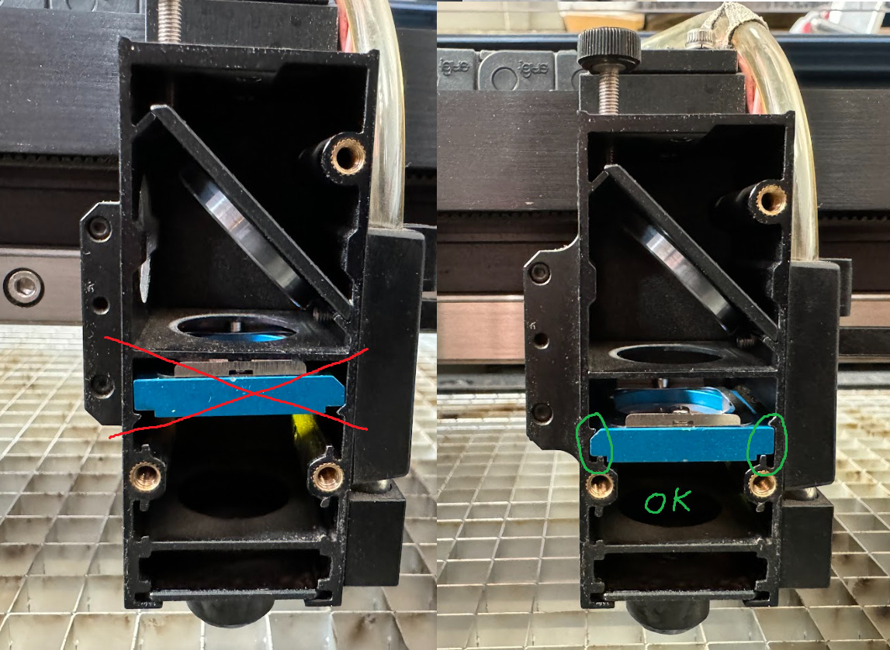
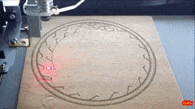
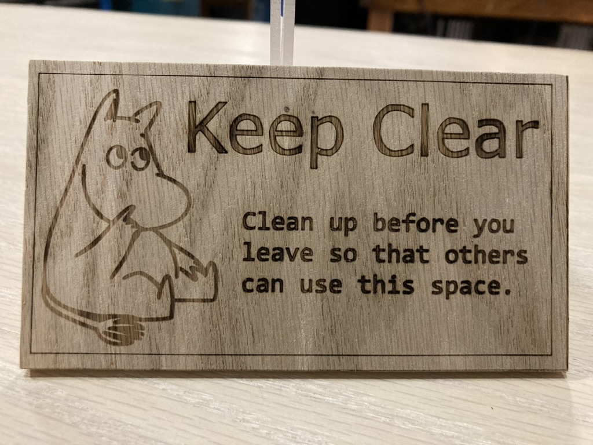
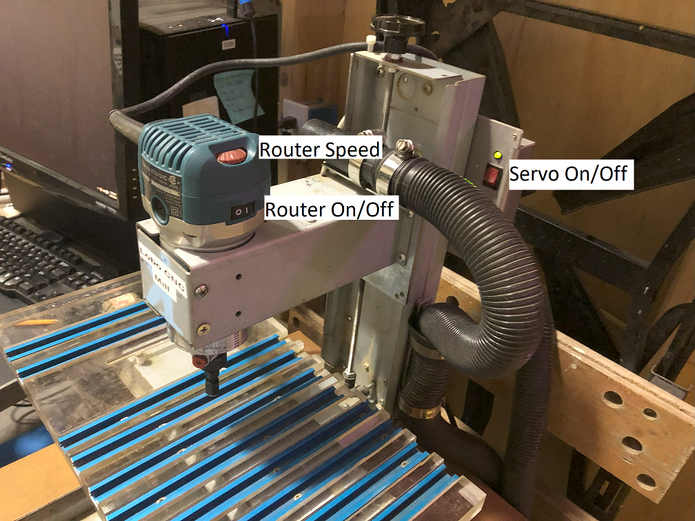
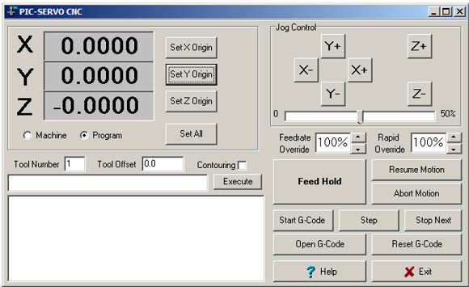
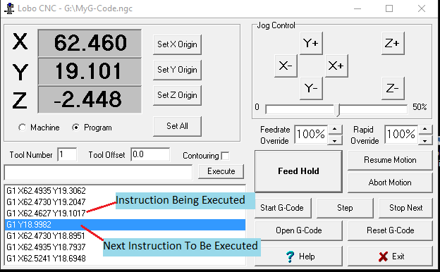
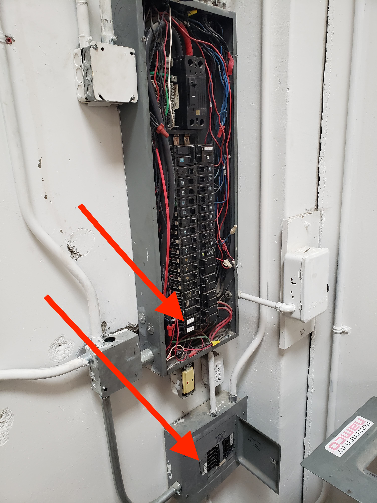

This is a collection of notes from members at ALT Space, a community workshop in the Georgetown neighborhood of Seattle. If you're not already a member, then you probably want to visit https://www.altspaceseattle.com instead.

Running a collective space shouldn't be lonely, let's help each other out.
Two things you can do:
- Edit or add to this manual if you know something that could help us run the space.
- Subscribe and add to the shared Administrative Chores Calendar so we can remind ourselves when something is due.
Responsibilities
Everyone in the space
- Clean up your own messes, put away tools, leave the space 20% nicer/better/cleaner than you found it.
- Treat the space as if you own it, not in the sense of your own private workshop, but in the sense of a small business you co-own that you want to be attractive to your peers (customers).
- Be friendly and courteous to other users of the space. Know and follow the rules. Try to resolve interpersonal conflicts without escalation, but bring problems to a board member or manager if necessary.
- Use the space safely and responsibly, teach other users about safety in a respectful manner if you see unsafe activities or behavior.
- Attend monthly member meetings, make your voice heard on the mailing list or in the chat, think about ways the space could function better and share your input with the community.
Board of directors
- Take responsibility for implementing the will of the membership while ensuring the space’s operational needs are met.
- Attend the annual board meeting in early January.
- Attend other ad-hoc board meetings as required.
- Officiate member meetings when available.
- Mediate member disputes if they arise.
Officers of the board
Officers have a 1-year term and are selected from active board members in January. Two or more offices may be held by the same individual except that the President cannot also be the Vice President or the Secretary.
President of the board
- Write letters and deliver reports to the membership about the health, status, and future plans of the space.
- Act as a voice for the membership, ensuring the board takes actions that have positive impacts for the membership.
- Make sure the operations of the space are being performed in a competent manner.
Vice president of the board
- Stand in for the president when the president is unavailable.
- Help the president achieve their tasks.
- Purchase insurance for the space.
Secretary of the board
- Take minutes at the annual board meeting and at other meetings as necessary.
- File annual paper work with the Secretary of State.
- Organize and manage the space’s paperwork, board minutes, membership roster, and waivers.
Treasurer of the board
- Manage the space’s accounts. Keep and organize receipts and invoices.
- Provide funds as necessary to accommodate authorized purchases for the space
- Provide the board and the membership with reports regarding the space’s financial health and budget.
- File annual tax returns.
Space manager
This isn't a board position, but a bunch of tasks that must be done:
- Act as a conduit of information between members <=> the board <=> the public as well as altspace’s landlord and other vendors.
- Answer emails from the public, answer the phone if no one picks up, give tours and represent the space. Onboard new members.
- Manage the mailing list.
- Manage and collect payments from the membership, "go to the bank" from time to time.
- Ensure the space is running in a clean and efficient manner.
- Renew annual fire permit and fire extinguishers.
- Periodically inspect and test safety equipment.
- Restock first aid supplies.
- Acquire and restock consumables.
- Fix or arrange to fix broken tools.
- Coordinate use of the space for events, pro spaces, oversize materials, and member storage.
Management
Day-to-day management of the space can be performed on an ad-hoc basis by anyone who has the time and understands the problem. If you notice something that needs to be done, perhaps you would be a good person to do it. If you don't know how to do something ask someone who has done it before, then add the information to this wiki!
Access to sensitive information (accounts, credentials, keys, etc) is available on a need-to-know basis. If you need to know, ask around and someone will tell you.
Personally Identifiable Information (PII) of members should only be shared with directors of the board or agents duly authorized by the board to handle such data.
If you have time and you love the space consider stepping up to help keep the place running. By managing the space collectively we ensure the needs of the space can adapt to changes in membership or conditions on the ground.
Laser Engravers
We have two laser engravers: SpiritGX (60x95cm) and Mercury II (43x61cm). You can etch and even cut out material if it's thin enough.
Setup
- Protect your eyes 👀
- Keep the lid down and don't stare at the laser while it's printing.
- Ventilation
- The switch is by the metal shop door.
- Ensure the ventilation blast gate for your laser cutter is open.
- Power on the laser engraver.
- The switch for Mercury II is a little hard to find - it's on the back right corner.
- Turn on the air blower. Without it, cuts are much more likely to flame.
- SpiritGX has a built in air compressor in the cabinet below the engraver.
- There is a manual flow rate adjustment in the cabinet
- Currently the compressor leaks something fierce, so only have it on while you're engraving.
- Mercury II is connected to an external air line - open it just a bit to let air flow.
- Close it when you're done!
- SpiritGX has a built in air compressor in the cabinet below the engraver.
Resources
Periodic maintenance
- clean the lens following the instructions in the user guide.
- lens must be in correct position for proper focus

Software
A special print driver is needed to operate the laser engravers. This is already installed on the workstation connected to the engravers.
I've been using Inkscape to design my prints and send them to the engravers, but there are probably other options.
Raster vs. Vector
The laser can do two kind of printing.
Raster Printing

During raster printing, the engraver will go back and forth from top to bottom, like an old inkjet printer, and pulse the laser when it's over something that needs to be etched.
This seems to be the "default" way of engraving with our print driver. e.g. if you "File > Print" from Inkscape, it will always print raster.
Vector Printing
During vector printing, the engraver will follow the shape of each line as it engraves.
Vector prints are necessary for cutting out shapes, e.g. if you are making a stencil. Even if you aren't cutting all the way through material, vector lines tend to be crisper and much faster.
However, vector prints can only be used to etch/cut very thin lines. You can't use it for broad strokes or for filling in background - raster will be used for that.
Specifically, the print will only attempt to vector print line widths set between 0.001" (0.025mm), 0.004" (0.1mm), everything else will be considered raster.
It's OK to combine raster and vectors in a single print. In the above "Keep Clear" print, the letter outlines and the border rectangle were vector cut, while the letter fill and the Moomin strokes were done raster, all in a single print job.
Steps for vector printing in Inkscape
Ensure your vector line strokes are set to 0.001" inch.
Go to: Extensions > Export > Win23 Vector Print
This will pop up the print dialog. (🐞 It seems to always default to the SpiritGX printer, I haven't figured out how to vector print to Mercury II.)
Select "manual colors" if you'd like to specify laser parameters like power, speed, and PPI. Then adjust settings in the "Pens" tab. The default settings seem pretty conservative for things like etching plywood. A good starting point might be Speed: 30, Power: 100, PPI: 1200, but plan to do some test prints to hone in on your settings.
🐞 Inkscape alpha crashes
There is a bug in the current stable version of Inkscape (v1.2) that prevents vector printing from working. To work around this we are running an alpha version of Inkscape (v1.3). Vector printing works, but the software often hangs. Presumably because it's bleeding edge. If you're reading this and a Inkscape 1.3 or later is out. Give it a try. If it works, update the software on the laser engraver workstation and edit this page!
Lobo CNC Mill
General Process
Ideally you came here with a general understanding of the CNC Milling process.
If not, the generic CNC milling process consists of:
A. Capture your design in a computer program.
Not addressed in this guide.
B. Transform your design into CNC Tool instructions (G-code).
Not addressed in this guide.
C. Setup the Tool and run the Tool Instructions (G-code).
The ==objective of this guide==: How to set up and run the Lobo CNC Mill.
The assumption is you are here with your G-code in a text file.
Safety
This guide assumes you have an understanding of personal safety involving machinery. This is a strong, sharp, spinning machine that may move without warning. It can be loud and throw shrapnel at any time. If you have questions, concerns, or are unsure about your safety, ask someone first.
To STOP all mill movement, click on the Feed Hold button, on the display.
This WILL NOT Stop the Router Bit from spinning.

To Stop the router from spinning, turn off the router power.

General/Overview
Electronics Switch

Knobs
When the mill is not performing any automated activities , the physical position (X, Y, & Z) can be adjusted using the three control knobs.
Axes
The mill uses the normal Cartesian Coordinate system (X, Y, & Z). However, because the workpiece moves in the X-Y planes relative to the cutting tool, the movement directions (+/-) can be counter intuitive. For example, when the X position is increased, the bed/workpiece will move to the left and NOT the right (the direction of increasing X). But from the bed/workpiece perspective, increasing X DOES move the the cutting tool to the right (the direction of increasing X) because the bed/workpiece is moving left and the cutting tool is remaining still.
Bed Dimensions
Imperial maximum dimensions:
- X: 10 inches
- Y: 7 inches
- Z: 6 inches (assumes zero tool length)
Metric maximum dimensions:
- X: 254 mm
- Y: 178 mm
- Z: 152 mm (assumes zero tool length)
Inputs to this process
G-code
G-code is a text file with step-by-step instructions for the mill. This typically comes from the CAM process.
You will need to know the following about your G-code:
-
The units - When the G-code was generated, either Metric or Imperial units were used. Some G-code generators will state the units used. If the file starts with “G20”, then the units are in inches. If it starts with “G21”, then the units are in millimeters. The Lobo CNC Software is NOT smart enough to read this and adjust accordingly. You must run the correct program based on this information. See Imperial (Inches) or Metric (Millimeters).
-
The origin of the model - When the G-code was generated, it was relative to the origin, X=0, Y=0, Z=0. All motions and dimensions in the G-code are relative to this location. This is typically one of the top corners of the material, but may be anywhere convenient.
-
The Bit Size & Shape. See below under Cutting Bit.
Material to Cut
This is the stuff you want to mill your design from or into.
“The sculpture is already complete within the marble block… I just have to chisel away the superfluous material.” ― Michelangelo
The material is typically foam, wood, or plastic. The Lobo Mill will struggle to simply engrave soft metals like aluminum. Attempting harder materials is a bad idea.
Cutting Bit
- Bite Type - The bit must be appropriate for the material being cut. The wrong type can burn or melt your material or be quickly dulled by the material.
- Bit Size & Shape - The G-code was generated based on this bit and if a different size or shape is used, the results will be different than intended. For example if a larger diameter mill is used, more material will be removed than specified.
The use of multiple bits is not covered in this guide. The Lobo CNC interpreter does support multiple tools, but there is no tool changer and the changes must occur manually.
Assumptions
The Lobo CNC Mill is already connected to a dedicated PC with the appropriate software installed and configured. Any connecting or configuring is beyond the scope of this simple guide.
Setup for the Lobo CNC Mill
Start the Software & Homing
Imperial (Inches) or Metric (Millimeters)
There are two Icons on the PC desktop:
- LoboCNC - Inches
- LoboCNC - Millimeters
See the units discussion in the Inputs/G-code section.
Double-click the Icon for the units you wish to use.
Servo Control Power
When the software prompts you to,
- Turn on the Servo Control Power. (No Worries if it is already on.)
- Click OK

Homing
Next, the software will ask: Do you want to execute the homing process?
With rare exceptions, answer yes to this.
The Lobo Mill knows where it is by counting the rotations of the threaded shafts. Homing is the process where it moves to the stops of each axis (a known location) and then zeros that count. Thus, ensuring that the count is correct.
Done Homing
Once the software is done homing, the CNC Control Window will be displayed:

Mill Setup
Test Options
It is rare to get your expected results from the first run of the G-code. There will typically be an iterative process of “dialing it in” needed.
It is recommended to test at least the first portion of your G-code with no bit installed, no material installed, and with the router turned off. This will allow you to watching for the mill exceeding the bed limits of your material or crashing the cutting bit into something.
Even after you have some confidence in the G-code, it is recommended that you try the first cutting on Scrap Material First.
The following is the setup instructions for using the mill. There are additional
[Suggestions for Testing Your Setup]
if you wish to use them. When you are ready to cut for real, repeat the instructions without those suggestions.
Setup the Cutting Bit and Material
- Install your material to be milled. [For Testing, first do not install any material. Second use scrap material to confirm results.]
How to attach your materiel to the mill table will depend on the type of milling you are performing and is beyond the scope of this guide.
In general:
- Your material must be secure enough to never move while being milled. Large portions (larger than chips) being removed must not be allowed to come loose.
- If held down by clamps, they must not be located where the bit will collide with them.
- DO NOT mill into the mill bed. If your material will be milled all the way through, sufficient sacrificial material (spoiler board) must be used underneath.
- Install the cutting bit into the Router. [For Testing, Leave the Bit Uninstalled]
- Be sure to use the bit that was used for generation of your G-code. i.e., The Diameter of the cutting portion and Shape of the End (End mill, Ball, Tapered,...)
- Be sure to use the bit intended to cut your material. The wrong type can burn or melt your material or be quickly dulled by the material.
Zero the Mill Location
-
Move the mill so that the end of the bit is located at the the Origin of the model using the X, Y, & Z +/- buttons on the CNC Control Window. (Or the CNC knobs, if need be)
[If no bit or material are installed, locate the mill approximately, as if they were installed.]
[Alternately, locate the end of the bit much higher than normal - so that all G-code Z movements will NOT contact the table/material] -
Zero the X, Y, & Z coordinates by clicking the "Set All" button.
-
Advance Setup:
- You can zero individual axes by clicking the "Set X/Y/Z Origin" button
- You can enter specific offset numbers by clicking in the number windows
Load the G-Code
- Click the "Open G-Code" Button.
- Navigate to your G-code file and open it.
Here is where you need to be warned that the Lobo CNC software uses a "Reduced G-code Instruction Set". Meaning that it only understands "basic" G-code instructions. And unfortunately, the software will simply ignore G-code instructions that it does not recognize, with no caution to the user. The best solution to this issue is to use a CAM output setting for “simpler mills”. I have had good results from CAMs that can generate code for a “Generic Linux CNC”. Barring that, you may need to ask for help or learn some G-code to alter your file.
As the G-code runs, the lines being executed will be displayed. The highlighted line indicates the NEXT instruction to be executed, the line above the highlighting is the instruction currently being executed.

At this point, be watchful and ready to stop the mill if it goes rogue. See the Safety section above for stopping things.
Run the G-Code
The next step will start the execution of the G-code. This is a quick reminder that:
- To stop the mill's movement click the Feed Hold button
- To stop the Router from turning, turn the router OFF
- Click the "Start G-code" button, to run the G-code.
- Most G-codes will display a window to "Turn on the Router".
- Turn on the Router. [If you are testing with no intent to cut, leave the router turned OFF]
- Click the OK button.
- Click the "Start G-code" button, again (not sure why).
- Carefully watch the mill behavior and stop it if there are problems or concerns.
- When done,
- Turn off the router,
- Click the Exit button on the display, and
- turn off the Servo Control Power.
More Lobo CNC Info
You can read the instructions that came with the Lobo CNC Mill by clicking on the "Help" button on the display. Or, see them here Instructions. Keep in mind that the Lobo CNC Mill was a DIY kit from over a decade ago. The instructions are detailed and assume the reader is either experienced or not afraid to experiment. It is my genuine hope that this guide helps you to become both.
G-Code Troubleshooting and Tweaking
As you become more familiar with the mill, there are more features available from the Lobo CNC software. Instructions. e.g.,
- Pausing/Resuming the G-code
- Single stepping through the G-code
- Adjusting the movement speed while running
- Executing single G-code commands manually
See the Help File (pscnc.pdf) for more details.
Advanced LoboCNC G-code Info
Other types of advanced info you can find in the Instructions:
- How to define different tools (cutting bits) and have the G-code stop and prompt you to change them.
- Advanced zeroing/homing the mill location.
- Using the Contouring option.
- The detailed limitations and capabilities of the LoboCNC G-code Interpreter (PSCNC).
More CNC Info In General
My name is Jim Schultz, and I started this guide. I have zero training in milling or in CNC, and all of my knowledge is from reading, asking questions, or trial & error. If you want to risk my help with this mill, I would be happy to try. You can find me on the AltSpace Discord.
Other Contributors and/or Milling/CNC advisors:
Please put your name here
Torchmate Plasma Cutting Table
TBD
Working Notes: https://docs.google.com/document/d/1qeKu010Aiu2q-D895r8eaPH7ZCR6tQUISDu4nlC6EyE/edit?usp=sharing
Electrical
Our space has a fair amount of power, however, sometimes we still trip breakers. Most outlets are labeled with their corresponding circuit for easy identification. As a general principle please do not use multiple power hungry tools on any one circuit. All 120V circuits in the space are 20A.
Be mindful that the second floor has only a single 20A circuit. This was done to provide as much power as possible to the metal and wood shops.
If you do trip a breaker use the diagrams below to identify which circuit you tripped and the corresponding circuit breaker. Please do not enter other tenants spaces without asking permission. If you'd rather someone else deal with the power please send an email to the mailing list, contact the space manager, or post in the discord!
Circuit Diagram

Amendments:
- As of some time early 2024, Circuit-C is dead.
- As of some time early 2024, an additional circuit was extended to the upper level. If someone has the details, update this page or ask someone on discord to update this page.
Breaker Locations
Neither of the two breakers are accessible without requesting access from other tenants. Please do not enter another tenants space without getting permission. The other tenants are aware that the circuit breakers are located in their spaces.
- Breaker 1 - Located in the pottery studio across the hall from the large ALTSpace interior doors
- Breaker 2 - Located behind the door directly across from the main ALTSpace interior door

Circuit Breakers
The individual circuit breakers are labeled as "ALTSPC - LETTER"
Breaker 1

Breaker 2

Bi-yearly Air Compressor Servicing
Several compressed air lines run through the space. The air compressor lives behind the member storage shelf on the first floor near the laser engravers.
It's good to check the compressor every 6 months or so to make sure it has oil. There is a reminder to do this on the shared calendar.
Always disconnect the air compressor from power before any kind of servicing - there is a disconnect switch on the wall behind the compressor. The compressor has a large exposed belt and spinning wheel and can start suddenly at any time if not disabled.
The large green thing next to the air compressor is an air drying unit, use it if you need the air in the lines to be extra dry, but turn it off when you are done using it. The tank under the compressor also has a timed discharge port at the back that discharges any collected condensation on a regular interval (as long as it remains plugged in and the outlet's protection switch hasn't tripped).

🔥Fire Permit and Extinguishers🧯
Some of our tools, like welding equipment and the plasma cutter, require us to have an up to date fire permit - it's a piece of paper hanging in the metal shop, that must be renewed annually.

As part of the permitting process, an inspector will stop by unannounced, usually 1-2 months after the permit is renewed. Among other things, they'll be verifying that our fire extinguishers have had their annual service. We typically do them at the same time as the permit, but you can check the tag on each fire extinguisher in the space to be sure.

The inspection helps make sure our space is operating safely, and also puts us on file with the fire department, so that in case there ever is a fire here, they'll know to respond based on the specific equipment and chemicals we have.
First Aid Supplies
There is a larger first aid box in the main space with smaller ones in woodshop and metalshop.
Each should contain (at a minimum):
- disposable sanitary gloves
- antiseptic wipes
- various sizes of bandaids
- antibiotic ointment
- ziplock bag and chemical cold pack in case of amputation 😬
- disposable splinter picker
- knuckle bandages
Additionally the larger box in the main space should have:
- NSAID like acetaminophen, aspirin, or ibuprofen
- eye-wash
- medical tape and gauze for when band-aids won't suffice
- butterfly/wound clamping bandages: e.g. 3M Steri Strip Skin Closures 1/4" X 3"
main space

woodshop

metalshop

Onboarding
Any current member can onboard a new member to the space.
Make sure that the new member:
- Has filled out a waiver
- Has gone through an orietnation and has read and understands the rules of the space
- Has made at least one payment of membership dues by cash, check, or paypal
If all of the above is true, you can give them access to the spacce and communication channels and welcome them to the space!
Waivers
Blank waivers can be found in the hanging file just to your left as you walk in the keypad door. Completed waivers can be left in the cash deposit box (on that same wall next to the first aid kit).
Orientation essentials
Altspace is a special place, and might operate differently from what people are used to.
As well as written rules, walk the new member through the space.
At a minimum, you should go over these things:
- Exterior door: there's a little jiggle dance you have to do to get it open. Have them try.
- Last person out closes the doors/lock up when you leave. Communicate when you are leaving so anyone else knows they are the last person.
- There is no one responsible for cleaning up your messes except yourself, so clean up after yourself + an extra 20%.
- Tag/tape system:
- red (private - do not use this — There should be a name on it if you have questions.)
- yellow (use with permission — there should be a name to contact on it.)
- blue or untagged (public)
- Ask the new member what project(s) they are pursuing so you can give them any specific tool orientations relevant to them, or if it's a machine you aren't familiar with, help them to ask in discord.
Woodshop
- Dust collection should be connected whenever using the table saw or planer. If there is any sawdust accruing in the plastic overflow bag, that means the primary sawdust collection barrel is over full and needs to be emptied immediately. Show them how connect the hoses, turn on the machine, and how to remove the sawdust barrel, because it is a little clunky.
Metalshop
- Always turn on ventilation.
Communication channels
💬 Discord chat is where most day to day chatter happens.
📆 ALTSpace public calendar is for scheduled orientations, events, or anything else you want to coordinate with others in the space. In the past when our shop was smaller, we've used this to coordinate sharing high demand resources like the woodshop. You're welcome to work without a reservation, but if someone already has it reserved, they get priority. Ensure that your fellow members have fair opportunities to use the space by making your reservations not too frequent or long.
✉️ altspace-seattle google-group has existed for a long time, but doesn't get much traffic these days.
✉️ altspace@ignitionnw.org is a catch-all place for questions, monitored by several members, including the space manager.
Liability Waivers
ALL users of the space must complete and sign a Liability Waiver before making use of any of the tools or amenities at the space.
If you bring a guest into the space make sure they fill out a waiver before they use any tools, or even if they're just going to be hanging out for awhile.
Completed waivers are kept in the black safe near the side exit and are organized into a number of folders:
- Pro - All currently active Pro members
- Basic - All currently active Basic members
- Supporter - All currently active Supporter members
- Potential - People who filled out a waiver but haven't signed up yet. -- It's good to go through these every now and again and shred the ones that are really old. If our membership is low, you can reach out to these people before shredding their PII and ask if they're still interested in signing up.
- Previous users - Not really a folder, but a large stack of previous members/ users of the space, sorted reverse chronologically
- Possibly not - Waivers of previous users who we may not want to allow to rejoin the space for whatever reason. Write notes on the back of the waiver.
If you have a waiver you need to file but you don't know the code to the safe, you can fold it in half and stick it in the cash payments box near the first aid kit.
Updating this Manual
The content of this manual lives at https://github.com/Air-Light-Time-Space/wiki.
The navigation menu is defined in the SUMMARY.md file.
If you're not familiar with Github, or otherwise have questions about editing the manual, feel free to ask in our discord server or on the mailing list.
If you are familiar with Github, then hopefully this is straight forward. The content lives in a series of markdown files.
Whenever a change is merged, the site will be automatically rebuilt and redeployed using Github Actions. It could take a minute.
Previewing your changes locally
Github's built in browser editor lets you preview your markdown changes, but it may render things a little
differently from our wiki software. If you'd like to see your changes before you
commit them, or if you want to test links, you'll need to build the wiki locally
before pushing your changes. To do so, you'll need to install the tool that builds
our wiki, mdbook.
You can install mdbook by downloading a
pre-built release, or if you have
rust installed, you can build it yourself
with cargo install mdbook.
Then cd to the wiki directory and run mdbook serve.
Management
This wiki page describes the bare minimum management tasks required to keep the space up and running. In general these tasks should be handled by the current board of directors.
ALTSpace (Society of Air Light Time Space SPC) is a Social Purpose Corporation registered in the state of Washington with Federal Tax Exempt 501(c)(7) status.
Document Locations
All important legal documents can be found in either the safe or the filing cabinet. Board members should have access to both. Yearly filings should all be kept in these locations.
Organizational Information
- Registered Name: SOCIETY OF AIR LIGHT TIME SPACE SPC
- Registered State: Washington
- Entity Type: Social Purpose Corporation
- Federal IRS Status: Federal Tax Exempt 501(c)(7)
- EIN & UBI can be found in the locked filing cabinet
Government Filing Requirements
Federal Taxes
ALTSpace is Federal Tax Exempt by 501(c)(7), however, we still need to file a yearly report with the IRS.
- Who: Current Treasurer
- When: By May 15th
- What: Form 990-EZ (link)
Washington State taxes
- Who: Current Treasurer
- When: By April 15th
- What: Combined Excise Tax Return - Can file through secure.dor.wa.gov
- B&O classification is “Service and Other Activities; Gambling Contests of Chance”
- Cost: Minimal, should be none if our revenue is < $50,000
Secretary of State annual report
- Who: Current Secretary
- When: June 30
- What: Annual Report can be filed at https://www.sos.wa.gov/corporations-charities (Click “Express Annual Report”)
- Cost: $60
City of Seattle requirements
- TBD
Publish Annual Social Purpose Report
- Who: Current president
- When: January 1st
- What: A letter stating what activities our organization undertook in the last calendar year to achieve our "Social Purpose". RCW 23B.25.150
Operating Requirements
Annual Insurance
- Who: Current president
- When: September 30
- What: Reach out to our brokers (Leavitt Group - https://www.leavitt.com/)
- brittney-rumbaugh@leavitt.com - Commercial account manager
- michael-hufschmid@leavitt.com - Agent
- Cost: ~$1700
Annual Fire Permits
- Who: Current president
- When: September
- What: Seattle Fire Department
- Cost: $522
Annual Test & Recharge Fire Extinguishers
- Who: Current manager
- When: September
- What: I like Western Fire & Safety (https://westernfireandsafety.com/) in Ballard, but there are other places that do this, including located more conveniently south. Depending on factors, extinguishers could be AWOL for up to 24 hours, so I often split them into two batches so some extinguishers remain at the space, we could label (A/B) extinguishers and turn this into a bi-annual event
- Cost: ~$200
Meeting Minutes
Minutes from past meetings are reproduced here to provide context and direction for space decisions.
2025
2024
- 2024-12-02 - Board Meeting
- 2024-12-02 - Monthly Member's Meeting
- 2024-10-07 - Monthly Member's Meeting
- 2024-09-09 - Monthly Member's Meeting
- 2024-08-05 - Monthly Member's Meeting
- 2024-06-03 - Special Board Meeting
- 2024-06-03 - Monthly Member's Meeting
- 2024-04-01 - Monthly Member's Meeting
- 2024-03-04 - Annual Board Meeting
2023
- 2023-12-04 - Monthly Member's Meeting
- 2023-11-06 - Special Board Meeting
- 2023-11-06 - Monthly Member's Meeting
- 2023-10-02 - Monthly Member's Meeting
- 2023-09-04 - Monthly Member's Meeting
- 2023-08-07 - Monthly Member's Meeting
- 2023-07-10 - Monthly Member's Meeting
- 2023-06-05 - Monthly Member's Meeting
- 2023-01-15 - Annual Board Meeting
2022
- 2022-12-06 - Monthly Member's Meeting
- 2022-11-07 - Monthly Member's Meeting
- 2022-02-07 - Monthly Member's Meeting
2021
- 2021-12-06 - Monthly Member's Meeting
- 2021-11-01 - Monthly Member's Meeting
- 2021-10-04 - Monthly Member's Meeting
- 2021-09-06 - Monthly Member's Meeting
- 2021-09-01 - First Annual Board Meeting
- 2021-07-05 - Monthly Member's Meeting
- 2021-06-07 - Monthly Member's Meeting
- 2021-05-03 - Monthly Member's Meeting
- 2021-04-19 - Monthly Member's Meeting
- 2021-03-15 - Monthly Member's Meeting
2020
- 2020-11-16 - Monthly Member's Meeting
- 2020-10-19 - Monthly Member's Meeting
- 2020-08-17 - Monthly Member's Meeting
- 2020-07-06 - Monthly Member's Meeting
- 2020-05-05 - Monthly Member's Meeting
- 2020-04-30 - Special Member's Meeting
2019
- 2019-08-05 - Monthly Member's Meeting
- 2019-06-03 - Monthly Member's Meeting
- 2019-04-01 - Monthly Member's Meeting
- 2019-02-04 - Monthly Member's Meeting
- 2019-01-07 - Monthly Member's Meeting
2018
2025-01-06 Board Meeting
Minutes recorded by: Michael Kirk
6 Board members in attendance: Noah Tippett, Matt Chang, Al Tempelton, Matt McKenzie, Greg Lucas, Michael Kirk
1 Observer in attendance: Daniel S.
Agenda
Assigning new board officers
As a refresher, previous board officers were:
- President: Greg Lucas
- Vice President: None
- Secretary: Michael Kirk
- Treasurer: Matthew McKenzie
New board officers are now as follows:
- President: Alexander Koshy Templeton
- Vice President: Greg Lucas
- Secretary: Noah Tippett
- Treasurer: Michael Kirk
Unanimously approved!
2025-01-06 Member's Meeting
Minutes recorded by: Michael Kirk
9 Members in attendance: Noah Tippett, Matt Chang, Al Tempelton, Dan (beckythecat), Matt McKenzie, Greg Lucas, Rahul Gupta-Iwasaki, Daniel S., Michael Kirk
Agenda
Matt McKenzie: Let's add Al to the board.
Al's been consistently helpful and proactive about improving the space. Let's add Al as a board member.
8 yes, 1 no (I think the nay was joking, but in the end it didn't matter).
Daniel S: is reducing entropy in the metalshop
Tossing scraps that are unlikely to be used, including the bedframe. We did learn that bed frames are typically hardened steel, so potentially useful, but no one had an imminent use for it justifying its storage.
Noah's going to take some measurements and get a truck to remove the plamsa table.
Daniel S. + Al: are triaging the Island of Lost Toys.
The pile of random big tools in the middle of the floor is growing.
- Jet jointer: has a new home lined up.
- Jet planer: is severely damaged, and probably not worth fixing - probably the best thing is to scrap it.
- Powertex planer: not being used, taking it to second use
- What's up with the multifunction drillpress (tagged by Chris Williams)? Potentially useful, but there's no currently space for it in the metal shop. Let's see what happens once some space is cleared.
Daniel S.: Thinks (optional) training would be nice
Stressed that a regularly scheduled event that attendees could just show up for would be more successful than 1v1 scheduling.
Lucas mentioned that pairing that with shop cleanup or other tasks could be a way to spend time if no trainees show up for training.
Noah: We used to have open houses. It also served as a way to attract new members.
Matthew: Let's set up a shared calendar for volunteers to sign up for these regular shifts.
The initial goal tossed around was at least 1 weekend and 1 weekday evening a month. There was much head nodding to the idea of a Third Thursday and Second Sunday training open house.
Michael: will share out a calendar link for people to sign up. Noah alluded to an existing calendar we could use - I've asked him but am waiting for the link.
Greg: wants an update about meeting with the new space architect
Background: Our current building will be demolished, currently scheduled for 2027Q1. Our landlord intends to re-home us in his upcoming development. In fact, he wants to include us in the design process (to an extent) to see if anything can be done to tailor the construction to our use.
Matthew: No update yet, but I'll let you know when we have something locked in.
Greg: What's up with the (lack of) heater?
Matthew: I submitted a ticket to landlord about getting our heat hooked up, but it hasn't happened. At this point it probably makes sense to just let it go, since we'll be out in one more winter.
Rahul: Do we still want a discord <-> email bridge?
Only Noah weighed in: Yes! Noah doesn't use discord - only email.
2024-12-02 Board Meeting
Minutes recorded by: Michael Kirk
??? Members in attendance: Matthew McKenzie, Noah Tippett, Andrew Huff, Greg Lucas, Matt Chang, Kevin Friberg, Michael Kirk
Agenda
Update board members
Remove: Aidan Hahn and Mars Saxman from the "current directors" in the bylaws
Change to: Andrew Huff, Greg Lucas, Kevin Friberg, Matthew McKenzie, Michael Kirk, Noah Tippett, Matt Chang
All approved
Bylaw edits from Matthew
Change all instances of "The Space" to "ALTSpace"
edit 1: 4 yay, 2 stand aside
Leave 114 as is.
Michael is going to remove the "supporter member" from the website, since we've had a few bad actors recently. But we'll retain the option to hand it out on a case by case basis. (all approved)
Get rid of proxy voting: unanimously approved
MSM revokes 122, doesn't actually care.
123 was coverd by proxy voting which is being removed.
Strike 124: The Board may, at their discretion, institute and implement further restrictions upon the format, but not upon the delivery, of proposals to the Membership, and may consider spurious any proposal not following said restricted format, so long as and provided that any such further restrictions upon said format are not too onerous, bureaucratic, wordy, overworked, tortured, or strained, etc. and so on."
Remove specific dues amounts fro the bylaws, say "dues set by the board"
Do not add changes about mandatory annual bylaw review, report
Offboarding: no changes to bylaws, but good policy.
148 passes, except last sentence
All meetings that fall on a Monday designated as a federal holiday will be rescheduled for the following Monday, at the usual place and time.
To workshop: 211 - which will have a regularly schedule board elections at a member meeting.
Remove all language about incorporators - it was only a tool needed to bootstrap the organization. (all approved)
ADD the following as areas of responsibility that are subject solely and completely to the Board (as opposed to allowing for binding Member votes on them): 5 yas, 2 sas
236: struck out. Already possible to do this.
246: Strike out the "Vote of no confidence" section. 4 yay vs 3 no
252: nevermind: MSM withdrew 412: nevermind: MSM withdrew
Update.
2024-12-02 Member's Meeting
Minutes recorded by: Michael Kirk
??? Members in attendance: Matthew McKenzie, Noah, Erick, Will, Andrew, Greg Lucas, Matt Chang, Kevin Friberg, Michael Kirk
Agenda
Greg: Fire permit is resolved
payment made, application submitted, inspection,
Fire extinguishers need to be recharged, Greg is part way through recharging them.
Greg: Do we want to sign up for the recharge subscription? Greg: Laws for fire extinguisher signage? Noah: We have a fancy co2 extinguisher, which is expensive to charge, but can be used on electronics.
Greg: Bought new drill battery packs
Greg: Young users in the future
Maybe we could account for this with the design of the new location - e.g. keep the safer tools in one section, like the 3d printing and CAD stuff. Probably there are insurance implications.
Matthew: Design of the new space
James and ??? asked us if we'd be interested in having a sit-down with the architects and seeing how we can make the space work for us. We'd give them some kind of wish list, and they'd see what they could/couldn't accommodate.
- Power, plumbing, street front access
Greg: Some orgs have a more incubator style model
Allows them to more easily get donations from bigger corps, e.g. Boeing / Microsoft.
Matthew: There will be an interim time between the old space and the new space
demolition is scheduled for Q1.2027
3-6 months where this space is being demo'd and the new space is being set up.
So we'll probably have to move twice. Maybe equinox can provide storage for the interim?
Greg: maybe a keep a minimal woodshop/metalshop somewhere. Noah: tool library model? Or some other less.
Noah: board elections coming up in January
Nominate yourself if you want to be on the board!
2024-10-07 Member's Meeting
Minutes recorded by: Michael Kirk
9 Members in attendance: Noah, Dan, Al, Matt Chang, Will, Eric, Michael Kirk, Matt McKenzie, Rahul
1 Guest in attendance: Grant from Seattle metal working email list (referred by Chuck).
Special thanks to Rahul for bringing the 'za! 🍕
Agenda
💥 Dan lead a discussion about better safety of the OXY-Acetylene rig in the metalshop.
It's one of the more dangerous tools in the shop.
We talked about storage and usage. Alternatives discussed included keeping it under lock and key, mandatory certification, or a lighter protocol based approach.
Ultimately, we decided on an approach leveraging the existing systems at altspace:
-
👷 TODO: Al is going to yellow tape the Oxy-Acetylene with his phone number. That means you cannot use oxy acetylene at altspace until you get an initial confirmation from Al, who will make sure you understand the do's and don'ts
-
👷 TODONE: Dan relocated the rig to a dedicated corner of the metalshop, where it should be returned to whenever you're done using it.
Replacing non-functioning plasma cutter CNC with a plasma cutting hand torch (30min proposal)
Original Proposal: https://docs.google.com/document/d/1hIySHSzWGPEO67aOeffXKIcqr-qNfW-MAfkrMV9yj0A/edit
The plasma cutter CNC in the metalshop hasn't functioned in several years and is taking up a lot of space that could be used for more basic metalshop needs.
Noah confirmed that he is the owner of the whole setup, including the table, machine, and torch. He bought it from a friend, and had a dream of configuring it to be a modular all purpose CNC for plasma, water jetting, wood milling, you name it. But life happened, and Noah has been too busy to push that dream forward for a while.
In the meanwhile, the metal shop has gotten busier over the last few years. Members at this meeting (and the Sept. meeting) expressed an interest in freeing up the space. A recurring theme expressed from active metalshop users was to reclaim that space for more "basic" tools (examples given: bolted down grinding station, hand drills with functioning bits, drill press, sheet metal break, band saw).
✅ We voted to get rid of the current table and machine (vote tally at least 4 in favor, 2 opposed, and several stand asides).
There was broad support for getting a hand torch plasma cutter that could one day be modified for CNC purposes. We didn't take a vote on that, but even the people who wanted to keep the old CNC supported getting a hand-held setup.
No specific space funding was allocated for buying a new plasma cutter at this meeting, but the treasurer (Matt McKenzie) confirmed we're currently operating at a healthy surplus, and the space can probably afford to help by tools while still building our nest egg.
Next steps
- 👷 TODO: Help Noah remove the old machine.
- 👷 TODO: Hone in on the exact plasma cutter / specs we want - Ian suggested one in the initial proposal, Al had a potential alternative in mind.
- 👷 TODO: Start fundraising from members (like we have with the joiner, planer, drop saw) for a new plasma cutter.
It's probable that the space can match some portion of the funds if there appears to be member support, but we'll have to talk about it at the next meeting assuming it's more than an individual board member's discretionary budget ($200).
Rahul gave an update on our missing Discord owner
Ava set up our discord chat, but is no longer active at the space and apparently no longer has access to her discord account which owns the altspace discord channel.
Does anyone else have admin access?
Rahul is going to look into how to recover a Discord server.
Matthew: Plans to spend some money on the woodshop
There are some projects in the work - notably ventilation and dust collection that will greatly improve the utility and comfort of the woodshop.
Stay tuned for some financial asks in pursuit of these goals.
2024-09-09 Member's Meeting
Minutes recorded by: Michael Kirk
6 Members in attendance: Will, Matt Change, Matt McKenzie, Ian, Greg Lucas, Michael Kirk
Agenda
⚡️All outlets in The Metal Shop are LIVE⚡️
So be careful.
Shout out to Matt McKenzie and Chuck for splitting the 240v into the woodshop for the new planer/joiner.
There is a junction box for this 240v circuit, which is where the circuit is likely to blow if overloaded.
Please let people know if you flip this breaker - if it's blowing all the time, we should address it.
🚧 WIP: upstairs floor outlets
Matt Stuart is planning to run circuit C up to the electrical outlets, also ethernet and compressed air.
Ian wants to run a compressed air line and hose reel into the metal shop.
Members in attendance approved of the expense.
Hot Permits
Matt Chang has put payment in the mail.
Our permit limits the number of machines in the space, this includes welding machines and the plasma cutter (but apparently not oxyacetylene).
Michael (notetaker) forgot which machines we proposed having in the space.
Plasma Cutter: The Next Chapter
The plasma cutter at altspace belongs to Noah. It's a CNC with a powerful cutting head. In theory you can do really cool stuff with it, but it's been out of commission for a long time.
In the meanwhile, it's very big and takes up valuable space in the metal shop.
Recently some folks (at least Chuck, Ian, and Lucas, though maybe others) have been working on restoring it and have made some progress, but more work remains.
At the meeting (which Ian and Lucas attended, but neither Chuck nor Noah were able to make it), we discussing replacing the plasma cutter with something functioning and more right sized to the space.
Our best guess of an ideal shape would be something more like a 4'x8' table (vs. the current one which is more like 8'x8' (approx?)).
Stage 1: Replace the current plasma table with a working hand held plasma cutter. This has utility on it's own. Stage 2: Get a CNC to which you can mount the handheld plasma cutter.
We'd want to make sure the stage 1 handheld cutter we purchase is compatible as a CNC cutting head, but Ian and Will confirmed that this is a common and doable thing.
Michael and Ian are going to collaborate on a more specific hardward and implementation proposal for the next meeting. Reach out if you're interested!
Greg: There's some semi-abandoned things here. What should we do?
We didn't come up with any real conclusions on a new policy, but re-iterated the existing policy:
If you do not label your property, it becomes communal property. If you don't want people to touch your stuff, it needs to be labeled with Red tape. If you want to store private property at the space for more than a few days, you need to do so in your dedicated storage area - either by using tub storage or a pro space (reach out to Space Manager, Matt Change for details).
Greg: Is shopping around the idea of a regional "makerspace exchange"
Something like, getting together regional makerspaces, and for an extra fee, existing members at one space can use other spaces in the area - certain places may have tools for certain tasks that you only need once in a while. We can all benefit from eachother in this way, at a seemingly marginal expense.
The specifics are still being worked out, but everybody at the meeting thought this seemed like a great direction.
2024-08-05 Member's Meeting
Minutes recorded by: ???
??? Members in attendance: ???
This meeting hasn't happened yet.
Agenda
If you'd like to add something to the meeting agenda, add it here before the meeting. Please include your name, topic, and how long you think it should take.
Example:
- Johnny Appleseed: Fake proposal for cider press (10 minutes)
- Ada Lovelace: Fake announcement for hacker fair (5 minutes)
If you don't know how to edit this page, please ask someone on discord or the mailing list to do it for you.
2024-06-03 Board Meeting
Minutes recorded by: Michael Kirk
6 Board Members in attendance: Andrew, Greg, Kevin, Matthew McKenzie, Michael, Noah
Add Matt Chang to the board
Matt Chang was unanimously elected to the board by the six board members present.
-6- 7 Board Members in attendance: Andrew, Greg, Kevin, Matthew McKenzie, Matt Chang, Michael, Noah
Matthew McKenzie: proposed purchasing a Directors and Officers (D&O) insurance policy
This would protect board member's personal liablity, up to $1MM. Cost is about $1,300/year
Everyone present supported the proposal.
Additionally, Noah suggested looking to see if we could combine this policy with a general liability policy to save some money.
- 👷 MSM to purchase D&O policy.
- 👷 MSM to look into the possibility of combining policies under one provider to save money.
2024-06-03 Member's Meeting
Minutes recorded by: Michael Kirk
12 Members in attendance: Andrew, Chuck, Dan, Greg, Kevin, Matt Chang, Matthew McKenzie, Michael, Noah, Rahul, Roberto, Will
3.2 of 4 pizzas eaten, strong preference for pepperoni was observed.
Greg: Wants to fix or get rid of broken equipment.
- 👷 Dan volunteered to triage the metal shop.
Greg: Hot work permit needs updating, expires June 8
It costs more for a 5-9 machine permit than a 1-4 machine permit. Noah suggested that the limit might refer to concurrently running. It's never the case that we have more than 4 machines running concurrently at altspace — We probably don't even have the circuits for that — so maybe the smaller permit is sufficient for us.
- 👷 (Matt McKenzie?) is dealing with the permit process
Greg: wants to clarify policy on how long we keep peoples things here.
Storage at altspace is not free. If you are paying for a pro-space, you get some dedicated storage, otherwise if you are keeping things at the space for longer than a few days, you need to be paying for a storage bin ($10 a month, see https://altspaceseattle.com/memberships-rates/).
Noah said that historically there was a 6 months abandonment policy at which point things become property of the space.
You should still reasonably try to contact people if the property is labeled before claiming it or getting rid of it.
No action items were committed to.
Greg: Noted there is some open space.
Greg did some re-organizing and now there is some open space over by the sewing area above the metal shop. He's wondering if people have ideas for what to do with that space.
No action items were committed to.
Greg: Said we could buy some (~$200) hardware to get the plasma cutter up and running.
People seemed generally in support of this, but no action items were committed to.
Greg: Moved the 3-D printers to the mezzanine.
- 👷 Greg is triaging to get rid of redundant machines. Maybe the rest can be scavenged for parts.
Greg: Solicited input on ink for the plotter printer.
- 👷 Greg is going to buy some printer ink.
Greg Wants to install a security camera on the building
Chuck mentioned that a motion control light might be a good deterrent.
No action items were committed to.
Greg: Mentioned hosting a vending machine somewhere in the building.
Possibly this could be the vending machine that Matt Chang removed from the old space.
Michael doesn't want that machine inside our space again because it's very large and sat unused at the old space for years. He's fine with it being somewhere else in the building if the landlord is on board.
- 👷 Matt Chang is going to follow up with Sam (landlord) directly about putting his machine somewhere in the building.
Noah: wants clarity on where the "official" communication happens.
The context is that during cleanup, someone got rid of something that he wanted to keep.
Historically there is an email list, but it gets very little traffic (less than a message a month).
Noah voiced that discord is not a good interface for him.
- 👷 Michael is going to email the list to let them know that most conversation is happening on discord.
- 👷 Rahul is going to investigate some kind of bot to email out digests
Some people talked about changes they want to make to the website.
A lot of different ideas were spitballed.
Michael or Noah can facilitate access to the webserver if someone wants to make changes to the site.
Greg said that Ian might be interested in working on the website.
No action items were committed to.
Greg: Talked about how our paypal fees are high.
Noah mentioned: Maybe long term members can pay through direct deposit or automatic checks to avoid the transaction fees. Andrew (former treasurer): Pushed back, saying the fees aren't that significant, and the convenience of paypal is worth it.
No action items were committed to.
Rahul: is going to explore setting up a different wiki site
Editing the current wiki isn't easy for folks not comfortable with github. Maybe a more approachable option exists?
Andrew cautioned against the perils of long term maintenance. One bonus of the current wiki is that it is a statically generated site, hosted by and edited through github. So it doesn't need any hosting maintenance and we don't have to worry about getting hacked like the Seattle Library from some outdated wordpress plugin or whatever.
Andrew recommended avoiding any per-user credentials or anything else predicated on maintaining a central active member management system due to the ongoing maintenance burden.
- 👷 Rahul is going to look at our options.
Matthew is extending a shared circuit into the metal shop.
A few months ago, one of the metal shop circuits failed (Circuit C).
The circuit used by the lazer engravers is nearby and seems like it has capacity, so he's going to wire that into the metalshop as a stopgap.
James (the facilities manager) might be able to look at Circuit C at some point, but MSM doesn't want to overburden him.
Andrew mentioned maybe we could run a new circuit to the breaker box. Once we run to the box, we'd need James to do the hookup from there, but allegedly that's relatively simple for him.
- 👷 Matthew is going to extend circuit G into the metalshop
- 👷 Andrew is going to follow up w/ James about adding a new circuit to the box.
Matthew McKenzie (treasurer) gave a treasurer's update
Currently:
- 97 members!
- $10,000 in the bank!
- $1,500/month in the black!
Matt suggested converting "supporters" into "general members" and preventing turnover as ways to grow revenue. Noah cautioned against growing the membership without bound. At some point scaling problems will prevent the space from operating effectively.
2024-04-01 Member's Meeting
Minutes recorded by: Matthew McKenzie (and formatted/posted by Michael Kirk)
5 Members in attendance: Matthew McKenzie, Greg Lucas, and 3 others whose names weren't recorded.
The April meeting was called into order at approx. 1830 hours. There were five members attending in person, including Board members Greg Lucas and Matthew McKenzie. There were no members attending remotely.
3D Printing Area
Discussion of how to make this area as valuable and accessible as possible to members, many of whom show interest in using (or learning to use) our 3D printers.
We now have two newish Prusa 3D printers operational: one granted to us in exchange for a surplus PC; and another on long-term loan from a member (Wess). There is support for simplifying and standardizing our 3D printing hardware, to control operational costs and improve access to fully operational printers.
A member suggested trying to sell unwanted or non-working 3D printing hardware, but it was pointed out that the meager expected return from selling these machines might not justify the effort.
No votes were taken on the matter, but it was agreed that the owners of any 3D printer hardware, if they can be identified, should be contacted and given the opportunity to retrieve unwanted items.
Air Compressor
Greg stated that the leak that has taken the compressor offline is coming from under the steel rack on top of the tank, which holds the compressor machinery and cannot be removed except by cutting with a welding flame.
Furthermore, given the antique vintage of the compressor, Greg has been unable to find a professional repair person who will even look at the problem without a full, up-front payment for their time, and no guarantees they will be able to diagnose or fix the problem.
We have a portable compressor that will serve as a replacement for the time being. It is unreasonably noisy, however, and it cannot serve the same use cases (i.e. provide compressed air on demand to the various shop spaces and electronics work area).
Matthew stated that he would call an emergency Board meeting to authorize funds required to buy a compressor, since this is a matter of some urgency at a critical time for getting members involved with the space and driving membership growth,
Matthew also briefly noted that his project to re-route network Cat5 cables, including those running the door keypads for the access system, was nearly complete. outages related to the project (e.g. the ALTSpace Wi-Fi) would be fixed soon, and all four surveillance cameras would be back online.
NOTE: This was done, and the network upgrade project completed, the following weekend.
PayPal Fees
Greg said he wants to get PayPal to move ALTSpace over to its fee schedule applying to non-profits. He was tying at the time to take the first step in this process, which is understanding what documentation PayPal will require to make this change.
Social Media and Website
Greg asked whether we have a social media strategy, or accounts, or a person in charge of SM posts. Matthew said he didn't think so, nor was he aware of any ALTSpace social media accounts, much less of anyone posting to them.
Greg is also interested in upgrading the website: modernizing the design, adding additional marketing and member-facing features, etc.
Front Door Security
Matthew mentioned some incidents he had involving sketchy people hanging out near/in front of the external door, especially late at night. Other members in attendance noted similar concerns/encounters.
Matthew said building management offered to reimburse for materials to install lighting above the door if we took this on as a DIY project. Since nobody has offered to take point on this project, however, there are still no concrete plans to do any of this.
"Remove Your Stuff" policy
Greg wants to implement a formal policy governing tools, materials, etc. left behind by departed members. These members will be given ample time (i.e, 30-60 days) to remove these items; after that, the items will officially become the property of ALTSpace, and we may distribute or discard them as we see fit.
There was no opposition or questions raised about such a policy, which appears to be within Greg's authority to implement without a vote.
Non-profit Consultant
Finally, Matthew said he was working with a consultant who is giving ALTSpace five hours a month of pro bono time, along with access to her network of attorneys, accountants, etc. who also work pro bono or at a deep discount. The consultant, Caitlin Pontrella, works with non-profit boards on a variety of financial, operational, risk management and governance issues.'
Matthew's first call with Caitlin touched on a number of topics. He had also sent Caitlin a copy of our bylaws and current waiver for review ahead of a planned June Board meeting he will convene to consider any changes/additions to the version approved in November, 2023.
The meeting was adjourned at approx. 1930 hours.
2024-03-04 Board Meeting
Minutes recorded by: Noah Tippett
Directors in attendance: Andrew Huff, Kevin Friberg, Matthew McKenzie, Noah Tippett
Also in attendance: Greg Lucas, Surprise Guest
Directors not in attendance: Ava Hahn, Mars Saxman
Meeting is called to order at 7:30p, following a brief intermission after the monthly member meeting.
This meeting is a continuation of the annual board meeting, pushed from Feb 4th in order to give the membership full notice of incoming board nominations.
Greg has been examining altspace finanancials as prepared by outgoing treasurer Andrew.
We discuss the new board nominees, the only nominee in attendance is Greg Lucas who has been a member of the space since August 2023.
Ironically we failed to take any confirming votes during the preceeding member meeting, but since the current attendees made up the majority vote of the preceeding meeting we decided to take a confirming vote for Greg since he was there.
(Addendum: We later tracked down Daniel, a recently-joined member who had attended the earlier meeting and since retired to operating his forge on the loading dock and he confirmed his support of Greg for a board seat.)
Noah makes a motion to confirm Greg to the ALTSpace board:
- Matthew votes yes
- Noah votes yes
- Andrew votes yes
- Kevin votes yes
Greg Lucas is confirmed as a member of the board.
Since no other board nominees are in attendance we decide to move on.
Andrew informs us that there is a surprise guest at the meeting. Andrew (who is appearing remotely) pans his camera out and Michael Kirk is seen to be sitting on the same couch.
We welcome Michael to the meeting and Noah makes another motion to confirm Michael to the ALTSpace board:
- Matthew votes yes
- Noah votes yes
- Andrew votes yes
- Kevin votes yes
- Greg votes yes
- Michael votes yes
Michael Kirk is confirmed as a member of the board.
Greg asks for access to the financials worksheet from Andrew and gives Andrew his email address.
There is some discussion about new officer rolls and it is taken to a vote:
Greg to President? Passes with 6 votes.
Michael to Secretary? Passes with 6 votes.
Matthew to Treasurer? Passes with 6 votes.
Andrew mentions a small error we made on our IRS reporting for 2022, he says he will look into what is needed to correct this, if necessary.
Matthew brings up B&O insurance and there is general agreement that he should look into it.
Matthew also would like to talk to a non-profit consultant and has someone in mind who might offer us a couple hours for free or might charge for more advice. Matthew is given the go-ahead to look further into this as well.
Matthew makes a motion to schedule another board meeting for the first Monday in June (2024-06-03) at 7:30p (following the member meeting) to discuss the results of his investigation and changes to the bylaws. The motion passes unanimously.
Meeting is called to close at 7:50p
2023-12-04 Member's Meeting
Minutes recorded by: Michael Kirk
8 Members in attendance: Esther, Matthew McKenzie, Rob, Matt Chang, Jon, Ian, Greg Lucas, Michael Kirk
Happenings
Ian has been working with the 3d printer and was unable to connect to it on the documented http://cr10.local. Turning it off and back on again seemed to get it back online, but he hasn't had a chance to try printing anything yet.
Ian brought his metal chop saw and his grinding wheel into the metal shop. Thanks Ian!
The plasma cutter is online! Noah and Ian made a little test spiral after some chores replacing the control station monitor and keyboard.
Matthew McKenzie has been making steady progress on the railings around the upper mezzanine and work area. Godspeed Matthew.
Matthew McKenzie discussed the upcoming open house event we'll be tabling at Equinox. The hope is to let people know we exist and maybe draw in some new members. He'll share a post and solicit volunteers on discord soon.
It was noted that new board selection will take place at the next board meeting in January. Greg is thinking about joining the board. In accordance with the bylaws, the new board members will be confirmed at the general membership at a subsequent regular member meeting.
Greg wants to look into corporate sponsorships for altspace - e.g. for materials.
Greg wants to connect with other maker spaces to learn about how they approach corporate sponsorship. Godspeed Greg.
Rob expressed interest in working on the railing (and maybe small stairs!) for the lower mezzanine. Godspeed Rob.
Metalshop materials storage could use some attention from people who use the metalshop. Ian expressed interest in shepherding this. Godspeed Ian.
2023-11-06 Board Meeting
Minutes recorded by: Noah Tippett
Directors in attendance: Andrew Huff, Kevin Friberg, Matthew McKenzie, Noah Tippett
Also in attendance: Matt Chang, Greg Lucas
Directors not in attendance: Ava Hahn, Mars Saxman
Meeting started immediately following the monthly members meeting for November, around 7:00pm.
Andrew called this meeting to pass some bylaws and discuss other compliance requirements for the organization.
Draft bylaws previously written by Noah are discussed and Matthew proposes passing as is to gain compliance then revisiting with more edits and changes at the next annual board meeting.
Noah suggests implementing a couple previously discussed quick fixes, namely striking language mentioning our prior sponsors, Ignition Northwest, and the individual board member spending limit (which was arbitrarily set to $500).
Regarding the spending limit, Greg inquires as to our current average spending, we reviewed the spending worksheet and Matthew informed us he spends < $500/mo and usually batches his expenses.
In a brief diversion Andrew informs us of outstanding balances owed to members: Matthew - $1522.50, Andrew - $380, Michael - $360
Taken to a vote:
Strike references to Ignition Northwest from the bylaws? - 4 votes in favor
Keep $500 spending limit as is? - 3 votes in favor (Matthew abstains)
Noah moves to pass bylaws with agreed changes - 4 votes in favor
Bylaws must be published for legal compliance, Matthew proposes freezing them to PDF and putting on website. Noah agrees to work on this.
Andrew informs us of our requirement to furnish the state of Washington with yearly social purpose reports and asks for a review of some reports he’s written. No specific vote was taken, but outlook was favorable. Andrew will file what he’s got.
Noah asks where people want to keep a running log of board decisions as required in the new bylaws. Andrew proposes google sheets and it is unanimously agreed.
Matthew asks if our vote is enough to make the new bylaws binding, Noah reasons that power to enact initial bylaws ultimately comes from the organizations incorporators which are Noah Tippett and Ben Tramposh, and since Ben has left the board this is probably binding.
Someone asks if we have to send our bylaws to the state and none of us know.
Noah wonders if we have to send meeting minutes to the state. No one knows this either.
Meeting is concluded around 7:13pm
2023-11-06 Member's Meeting
Minutes recorded by: Noah
Members in attendance: Greg, Benjamin, Matt C, Matthew M, Kevin, Andrew, Rob, Noah
Many thanks to Greg, Benjamin, Matt C, Matthew M, Kevin, Andrew and Rob for attending our monthly meeting last night!
Greg told us our request for free ad spend from google was denied by robots, but he appealed and now we're on a 90 day human-review clock.
We talked about some random leaks around the space (it's been raining hard the last few days). Most of them were deemed to be minor, but Andrew agreed to investigate some newer vent work.
Fun projects were discussed:
-
We need to build a railing around the unsafe bits of the storage mezzanine, no one volunteered to do this at the meeting, if you're interested then let us know!
-
We need a door to the air compressor space. Noah agreed to investigate sliding hardware to deploy our extra wooden door in this manner.
Matthew mentioned that we are Equinox's artist/studio of the month (see: http://equinoxstudios.org/) They will be promoting us all month long on their social media and Matthew has proposed the following dates for open houses:
Thursday November 16, open house from 6-8pm Thursday November 30, open house from 6-8pm
If you are available at these times consider dropping by the space to hang out and chat with people!
Andrew went over our financials: our revenue from member dues is around $4600/mo, this month we spent $5400, but that includes ~$1700 for insurance which lasts the whole year, so we are currently solvent. Andrew informs us we have about $8500 in the bank. Andrew also informs us we hit 76 members which is an all time high!
Thanks to everyone who keeps the space ticking, we'll talk again next month.
2023-10-02 Member's Meeting
Minutes recorded by: Michael Kirk
9 Members in attendance: Andrew (new member!), Dina (new member!), Greg, Noah, Michael Kirk, Will, Matt Chang, Andrew Huff, Matt McKenzie
Andrew: gave a treasurer's report:
- Members: 61 (down a bit since last month)
- Bank Balance: ~$4.5k (after accounting for imminent rent/insurance payments)
Michael: wants to lower storage costs to $10/bin/month
It was voted on and unanimously approved. 🎉
- 👷 TODO Michael: update website explain storage costs
- 👷 TODO Michael: add physical documentation to shelf with payment link/QR code.
- 👷 TODO Michael: adjust any existing storage users payments
Greg: is going to set up a well-lit table upstairs for taking closeup photos.
Will: mentioned that someone asked about the metal lathe.
Greg: started a conversation about new-member outreach.
Noah showed the crowd our existing promo-stickers. They have an old address on them. This could be a project for someone interested in making promotional merch.
Greg: wants to manage a free google adwords campaign for the space.
Google offers some free advertising for non-profits (which might include our 501c(7?) status.
- 👷 TODO Andrew: provide the non-profit documentation to Greg.
- 👷 TODO Greg: set up the campaign
Matt McKenzie: suggested hanging posters in the hall in our building.
Matt McKenzie: Wants to post a sign in our parking space, since it's occupied by randos.
Matt McKenzie: Wants to offer free storage for projects being done for non-profits.
Noah: Paypal will allegedly lower our payment fees since we're a nonprofit.
He tried to apply for this discount once before, but didn't figure it out.
2023-09-04 Member's Meeting
Minutes recorded by: ???
??? Members in attendance: ???
Agenda
This meeting hasn't happened yet. If you'd like to add something to the meeting agenda, add it here before the meeting. Please include your name, topic, and how long you think it should take.
No one has added any agenda items for this meeting yet, but you can be the first!
Example:
- Johnny Appleseed: Fake proposal for cider press (10 minutes)
- Ada Lovelace: Fake announcement for hacker fair (5 minutes)
If you don't know how to edit this page, please ask someone on discord or the mailing list to do it for you.
2023-08-07 Member's Meeting
Minutes recorded by: Michael Kirk
5 Members in attendance: Noah Tippett, Michael Kirk, Will Collins, Matthew McKenzie, Matthew Chang
Will: wants a free metal lathe.
Conext: a couple weeks ago, Tony posted on discord that SnoCo (in Everett) is trying to get rid of their 42" metal lathe. The conversation in Discord kind of fizzled, so Will re-posed the question: Do we want it?
We discussed some concerns - primarily safety, tool damage, and space.
To address safety and tool damage, we decided the tool should be yellow tagged, to enforce that training happens before it's used.
Regarding space in the metal shop, it's tight, but it seems like we could fit it either in the NE corner by scooching over the welding machines or on the south wall by downsizing the breaker table.
If it's not useful we can resell / regift it.
No one at the meeting was opposed to getting it, and a couple people (Will and Noah) expressed positive interest.
👷 TODO: Will needs someone with a truck and some spare hands to help move from Snohomish. (post-meeting UPDATE: Will may have a line on a truck...)
Matthew (MSM): reminded the group we have computers to sell.
We still have pretty much all the computers we obtained from the shutting-down architecture firm a few months ago. A few are being used in the space, and Matthew Chang is going to set one up in his pro-space. We previously agreed that we could sell the extras for fundraising, but no one has yet. Attendees expressed being open to selling them in bulk if it makes it easier.
Matt (Chang): talked about paid storage options.
In general, storage is not free, because it takes up space that other people could be using. e.g. Alex paid for his under-the-stairs storage (thank you Alex!) and Will pays for his tub storage (thank you Will!).
A day or two is OK, but longer term personal storage needs to be negotiated with the organization. We've got a couple of options including a pro-space, a half-pro-space, individual tub storage. Talk to the space manager (Matt Chang) or ask on discord/mailing list to work something out.
Will: proposed building paid storage shelves along the western (narrow) mezzanine
The standard tub-size, 3 tubs high, could fit up to 9 tubs wide. This would cost about $200 in materials.
Michael: is going to organize shelf building
The meeting (including MSM, board member) approved spending up to $400 to build out shelves and a railing.
👷 TODO: Michael will coordinate with other members to make it happen (hopefully I can just steal Will's design, and find some members to help with construction 🤞).
Noah: What's up with our access system?
Every so often our door access system poops the bed and just leaves the door unlocked. It seems to be a bug in our door lock software/firmware.
Noah has a theory that, in the meanwhile, we can avoid the issue by resetting the system every so often, which he did tonight at the meeting.
👷 TODO: Matthew (MSM) is working with the vendor to apply a proper fix.
Michael: wants to know what people cover at orientation.
Altspace is different from a lot of other places, so it's important to give new members the right idea. We brainstormed some essential things to cover:
- tag system (red/yellow/blue or untagged)
- exterior door: there's a little jiggle dance you have to do to get it open. Have them try.
- lock up when you leave
- Ask the new member what project(s) they are pursuing so you can give them any specific tool orientations relevant to them.
- There is no one responsible for cleaning up your messes except yourself, so clean up after yourself + an extra 20%.
👷 TODO: Michael is going to add this to the wiki (Update: added to the onboarding page)
Matthew (MSM): committed to bring a marketing plant to the next meeting.
Matthew wants to discuss membership growth goals and strategy.
👷 TODO: Matthew will bring a plan to discuss next month.
Will: wondered where a good spot to get metal scrap would be.
Noah had a couple suggestions, but they weren't open to the public. No one else had any ideas.
Matt (Chang): wants to host a t-shirt screen-printing party.
We have a screen. Additionally, we'll need at least:
- ink
- design
- Noah has the "impossible triangle" graphic source
- supplies for printing the design onto the screen (photo resist or something?)
👷 TODO: Matt's gotta pick a date and publicize.
2023-07-10 Member's Meeting
Minutes recorded by: Michael Kirk
8 Members in attendance: Andrew Huff, Cody, Esther, Michael Kirk, Kevin Drury, Marshall, Noah T, Matt McKenzie
Andrew: reviewed our finances
We are just barely in the black. We spend most of our money on rent, but also have cash expenses. Currently 67 members.
We spent about $12k on the move to our current space. Our landlord has been open with us from the beginning that our current space will be redeveloped and we'll eventually have to move out. The timeline is uncertain, but approximately 2+ years from now. The landlord will work to rehouse us in one of his other buildings, but we should build up another nestegg because moving is expensive.
Other money-making ideas were mentioned, like grants, sponsorships, and group memberships, but nothing specific was proposed yet.
Michael: wants more pro-spaces available
And relatedly...
Andrew: wants to consolidate back-office space
Currently we have file cabinets by the entrance, security camera monitors in the electronics area, and the access management machine up on the mezzanine. Since it's typically the same group of people using all these things, let's consolidate them into one area to reclaim some space.
- 👷👷 TODO michael and andrew: consolidate the admin stuff and carve out a couple more pro spaces.
Esther: reported our wifi is broken (and then fixed it with Cody! 💪)
You've probably noticed the WiFi at altspace has been awfully "droppy" for months.
- 👷👷 TODONE Esther and Cody did some debugging after the meeting and identified the access point was connected with a cursed "ethernet" cable.
The cable was
sent back to hellunceremoniously retired and presumably now the wifi is great.
Thanks Esther and Cody!
Andrew: wants your help ($$$) to buy a nice metal bandsaw.
Andrew attended the equinox garage sale and bought a few small tools at rock bottom prices, but then came upon a most glorious metal bandsaw for $900 (it retails for about $2k).
Some attendees committed private funds and we agreed to make up the difference with space funds (up to $500).
If you're excited about having a nice dedicated metal bandsaw (cough THE WOODSHOP BANDSAW IS NOT FOR METAL cough), and want to keep altspace in the black, contact Andrew and commit some funds.
Andrew: reminded us we have computers to sell. 🖥️->💰
Last month we got some computers donated to us. We're using a few in the space, but agreed to sell the rest for fundraising.
- 👷 TODO Matt McKenzie: Post the spec sheet of the various hardware configurations
- 👷 TODO YOU 👀: Sell some computers
Michael: wants to host a laser engraver social 🥳
Andrew and Cody got our laser engravers working, and Andrew built a nice workstation for them. Let's celebrate, spend time together, and maybe attract some new people by hosting a social where people can learn how to use them and try them out.
Michael was authorized to spend up to $100 on party supplies.
- 👷 TODO Michael: send out a poll for dates (July/Aug)
- 👷 TODO Michael: coordinate food and any supplies
- 👷 TODO Michael & Matthew McKenzie: post event on meetup
Marshall: may host a leather workshop 🤔
The details are forthcoming, but Marshall might be interested in hosting a leather workshop. The challenges will be getting his equipment here and finding enough people willing to pay the cost of materials.
- 👷 TODO Marshall: design and publicize a workshop (or decide it's not worth it)
- 👷 TODO Marshall: contact Michael if you want help moving stuff
Noah: had some post script PSAs
Technically after the meeting ended, and the remote attendees left, Noah remembered a couple things...
Noah: had to clean up someone's sawdust mess from the dumpster
We love that people are emptying the sawdust from the vacuum cleaner. But Melissa (our delightful building manager) reported there was a mess of sawdust in the parking lot. Whoops.
- Bag up sawdust before throwing it in the dumpster.
- Don't compost sawdust (unless you're sure there's no plywood dust in it, which is unlikely at our space).
Noah: wants you to double check that the door is locked.
It's happened twice now that our access control system has gotten into a bad state where it stays unlocked - meaning both our interior and exterior doors are accessible. 😬
- 👷 TODO Noah: is following up with the developer of the system to see if this is a known issue with a fix.
In the meanwhile, wait a second after closing the door and make sure it's locked behind you. If it's not locking, power cycle the access control system, or at least post on discord so someone else can deal with it.
2023-06-05 Member's Meeting
Minutes recorded by: Michael Kirk
4 Members in attendance: Matt Chang, Maxx, Michael Kirk, Noah
Noah: filed our federal taxes. 💸
Noah successfully filed last three years of federal taxes.
We may be liable for a fine for the filing delays, but Noah requested an exemption. Noah mentioned worst case would be something like $10/day up to $10k, but given we're such a small organization that seems unlikely.
(https://www.irs.gov/payments/failure-to-file-penalty says the max penalty is 25% of your taxes, so it seems like it'd be much less than that if they decide to fine at all)
- 👷 TODO Noah: Official change of address form
- 👷 TODO Noah: Washington state taxes
- 👷 TODO Michael: Business license renewal (update board members).
Michael: noted meeting attendance is sparse.
It'd be nice to have more people at the meetings. We talked about some ways to have automated reminders and to solicit agenda items.
- 👷 TODO michael: set up calendaring system to remind himself to broadcast via email/discord ~5 days before the meeting and the day before the meeting.
Noah: reported the video conference link is broken.
We used to have a stable link to our video conference / virtual meeting at aloha.altspaceseattle.com. It's currently broken so we've been using an adhoc solution in the meanwhile. Michael may have broken it while updating our website ssl (sorry!).
It's partially a custom piece of software written by Noah.
- 👷 TODO michael: going to "take a look" and probably ask Noah for help if he gets stuck.
Maxx: wants to tweak the layout upstairs.
Maxx proposed swapping the electronics+3-d printers with the sewing area, so that the soldering and 3-d printers can be closer to potential ventilation access along the North wall.
- 👷 TODO maxx: follow up w/ Matt Mackenzie (@msm) who's been actively organizing the upstairs space.
Maxx: is going to donate a workbench.
Maxx has a 48"x32"ish workbench on wheels and offered to donate it. We thought it was a good idea. Noah is going to provide a truck and they're going to move it into the space this weekend.
- 👷 TODO maxx and noah: get that bench in!
Michael: wants to sell excess computers for fundraising.
We were recently donated a bunch of tools and desktop PC's (like 18?). Some are being, or will be, put to good use around the space, but we're unlikely to utilize all of them.
Michael thinks we should sell the remainder. No concerns raised by the group, but it was noted we could probably get more money selling them individually vs. taking the entire lot to e.g. RE-PC. Though it might make sense to offer a bulk discount.
- 👷 TODO Michael: Post some computers on craiglist/offerup/w.e.
Michael: realized we have a functioning phone.
Just dial 1-87-SPACE-ALTS!
Michael was surprised when the phone in the space rang and answered it and it was a real person calling for a tour. Apparently Dan fixed the phone recently. Thanks Dan!
Long ago (at the cherry st. location?) there used to be a failover, so if no one answered the phone, it'd roll over to a members cell phone, but that no longer seems to be in place. We could set that up again, but no one stepped up to bottom line this.
- 👷 TODO "someone should": set up phone failover system. Maybe a pager-duty style rotation to spread the burden.
Matt Chang: wants to set up a pottery corner
Matt wants to set up a pottery station with our potters wheel. It might be especially good for people who can't operate within Seattle Artist League's hours. No concerns raised by the group.
Maxx: is concerned about dust upstairs.
Maxx suggested hanging some sheets or other dividers. No specific plan of action was proposed, but it seemed like a good concept with no objections raised.
2023-01-15 Board Meeting
Minutes recorded by: Matthew
Directors in attendance: Noah Tippett, Kevin Friberg, Mars Saxman, Matthew McKenzie
Also in attendance: Andrew Huff
Directors not in attendance: Ava Hahn, Ben Tramposh
Meeting called to order at 1540 hours Present: Noah, Kevin, Mars, Matthew
Item 1: Move Andrew Huff to board of directors APPROVED: 4-0
Item 2: Elect Officers
President nominee: Matthew McKenzie APPROVED: 5-0 Treasurer nominee: Andrew Huff:APPROVED: 5-0 Secretary nominee: Mars Saxman: APPROVED 5-0 VP nominee: none elected for 2023
Item 3: Year end report to the membership Matthew and Andrew will create; Noah will consult. Goal is to complete this by Jan. 31.
Item 4: Retrospective on move and look ahead
Ventilation: Member Era volunteered to lead on implementing a system. There are concerns about a fan having a high enough cfm rating; and correctly cutting/installing the hardware.
Need to try fan motor that we have on hand.
Item 5: Admin obligations
Noah explained our tax stats; we are tax-free on membership dues.
We need to file federal taxes and approve bylaws this year (2023) to keep our organizational status with the federal government. Not hard, but needs to be done.
Noah drafted a set of bylaws that haven't yet been approved. We will put approving them on the agenda for the Feb. general meeting.
Item 6: Budgeting for consumables; prioritized list of upkeep/upgrade priorities for the space. Plan to resume purchasing basics -- e.g. gases for the metalship, tape and shop towels.
Item 7: Manager duties. Short list of responsibilities, including access system updates, tours/open houses, last-resort to reply to membership email inquiries, general awareness of the space.
Item 8: Modernize administrivia for the new space -- signage, etc. Posting email address to reach the manager with questions or to alert them to broken tools.
Meeting adjourned at 1620hrs.
SUPPLEMENTAL NOTE: We need to renew fire permits (expired 9/2022); will complete the metalshop ceiling prior to calling SFD for inspection
2021-05-03 Member's Meeting
Minutes recorded by: Noah
Members in attendance: Kevin, Ankur, Matthew, Andrew, Craig, Era, Ken, Noah
Many thanks to Kevin, Ankur, Matthew, Andrew, Craig, Era, and Ken for attending the meeting last night! The hybrid meeting with the new equipment worked pretty well.
When using the new door please make sure to close it securely behind you. The door closer cannot be relied on to fully shut the door. (If anyone wants to mess with it feel free, the pin that can be used to set the level of tension seems to be bent and stuck in its current position). In the meantime, please make sure the front door is fully closed whenever you use it.
Era offered to head up a team to tackle the ventilation needs of the shop so if anyone else is interested in working on that reach out and we'll get you in touch.
We voted to spend ~$60 on a retractable air hose from harbor freight, I'll try to stop by and grab one sometime this week.
We're interested in formalizing a manager position to make sure the space keeps running in a clean and efficient manner. This volunteer position would include a free desk space, booper for the back gate, and possibly other perks. The responsibilities would be basically those laid out in: altspace.wiki/responsibilities.html#space-manager
If anyone is interested in filling this position please speak up!
Let's plan to have an official vote on this issue and make the role available at our next meeting on January 2nd.
Many thanks to Ken and Ankur for moving all the stuff out of the public hallway! That is no longer something we need to worry about.
It sounds like many people will be out of town for some or all of the holiday season so we weren't able to get any good coordination at the meeting about ongoing build-out and organizing efforts this month, but if you're around definitely feel free to plug away at something and coordinate on here or in the discord.
Thanks everybody and happy December!
2022-11-07 Member's Meeting
Minutes recorded by: Noah
Members in attendance: Rick, Zira, Andrew, Noah
Thanks to Rick, Zira, and Andrew for attending the meeting last night!
It was a sparsely attended and unfocused meeting, so we didn't make any important decisions.
Andrew has built a rather fine bridge from the large mezzanine to the area above the shops. Also Andrew, Benjamin, Zira, Michael and others have finished putting the ceiling up in the wood shop.
We still need to put a ceiling up in the metal shop, get some lights mounted in the wood shop, build some railings around the upper level and get that area set up, figure out the heater, etc... So we figured we'd try to have another work party this Sunday to do some of that stuff.
Come by the space this Sunday, and maybe the next few Sundays too and help us polish up the space!
Also in January we will need new officers so if you are interested in being Treasurer, Secretary, or President of ALTSpace, join the board asap! How do you join the board? Just write to this mailing list and we'll vote you in at the next meeting on December 5th.
Many thanks to everyone who keeps altspace afloat!
2022-02-07 Member's Meeting
Minutes recorded by: Noah
Members in attendance: Andrew, Ankur, Benjamin, Kevin, Scott, Vera, Esther, Noah
Big thanks to Andrew, Ankur, Benjamin, Kevin, Scott, Vera & Esther for attending the meeting last night!
The property search continues. It sounds like we missed the boat on the place we were looking at in SODO, but we are 2nd on the waiting list if their current prospect falls through.
Andrew set up a google sheet to track the options that have come up: https://docs.google.com/spreadsheets/d/1lHkda-J2jZ8jx5hdVO1AKToYczkEJN-Nzj4hSiAxrxc/edit#gid=0
Kevin and Benjamin will reach out to Equinox Studios in Georgetown to see if there's a possibility of us finding room there.
Timeline wise we decided if we don't have a new space set up by the beginning of May we'll start winding the space down. We have till June 1st to move out, but we can move out sooner if we get our act together.
If you know of any good commercial real estate or have a commercial real estate broker you've worked with before you should use Andrew's spreadsheet and coordinate in the #locations discord channel. If you want to apply to a place and there's a reasonable application fee the space will reimburse that.
In other news, the Local Connectivity Lab is looking for technically aware volunteers who can help them as they expand their 4g and wifi community network. They need volunteers who can troubleshoot technical problems and help them onboard new clients. If you're interested, get in touch with Esther at the LCL!
Thanks everyone!
2021-12-06 Member's Meeting
Minutes recorded by: Aidan, Michael
7 Members in attendance: Aiden, Andrew, Bryan, Matt, Michael, Valerie
Heat
Val brought up the concern about the lack of heat.
Andrew: traced power from the heaters to the thermostat by the side door. Looked like someone had previously pulled the thermostat out, but he didn't want to mess with it further.
Val: Should the landlord take care of that? Is it in the lease? (lease is by the side door)
(Any input from folks who are in the know is welcome)
Woodshop
The woodshop is a very (the most?) busy desirable space right now.
- Longer term we can look into getting the north space back (if the numbers pan out, it would require a capitol investment), or consider alternative spaces, but in the immediate term we have ratified the following proposal:
Ankur: (via noah) there was some incentive in renting north and south space together from landlord since north space can be accessed from south space.
Ankur: Having front facing space is good advertising.
Aidan: garage front is nice. We have some duplicate tools, maybe even having two woodshop spaces is doable. Let's take account after new insurance is due, since there might be ramifications.
Ankur: biggest bottleneck is access to tablesaw. When scheduleing - indicate if you’re open to sharing the space or if you want the entire shop. do you need: table saw, cross cut saw, assembly
Bryan: proposed maybe there be some kind of per-member hours budget
Ankur: maybe that will discourage new members...
Calendaring Proposal
When reserving time on the shared calendar:
- Members are asked to include contact information on their bookings on the calendar so that multiple people using the space can be negotiated.
- Members should limit schedule bookings to 4 hours maximum and will lose priority if more than 15 minutes late to their booking.
- Unanimously approved across 7 members
Vending machine update from Michael:
- still looking through leads, many folks have flaked. Noah has a lead (Matt) who is interested in it. We are working on having it extracted.
- in 1 week we will authorize spending to borrow a truck for up to 50$ to get the vending machine for matt if noah has not been able to assist us.
"Buying Things" Proposal
- Full Proposal text here, but basically: To help maintain the space, any member can purchase up to $50 of supplies from this pre-authorized list and expect a prompt reimbursement: https://docs.google.com/spreadsheets/d/17nph-7mVd-YzlKXFxk2uTholVokZJ7OVb105P4w_eaY/edit#gid=0
- The treasurer reserves the right to veto a reimbursement in cases of abuse.
- Unanimously approved across 6 members (Andrew had to leave before we voted)
PSAs
- PSA: Val is a hero for cleaning the microwave
- PSA 2: use sensitive power strips so that we dont keep triggering the breakers
- PSA 3: Huge thanks to Michael for helping me with the meeting notes today!
2021-11-01 Member's Meeting
Minutes recorded by: Aidan
Members in attendance: Aiden, Andrew, Edward, Marshall, Michael, Noah, Valerie, Vera
Altspace Meeting Minutes 11/1/2021 8 members attended and noted the following
- Val will be in charge of the scholarship program
- Heat in altspace is not yet a thing as the base heaters are broken. People bringing in space heaters is welcome but risky if someone leaves theirs on.
- Michael will set up a temperature probe
- Membership meetings should stay primarily virtual even beyond the pandemic because that is easiest for the membership who are scattered across the state and more. A proposal may be made to create a better tech solution to have a hybrid virtual and in person approach in the space.
- A whitelist of common supplies should be solicited from the membership of which any member can purchase an amount of for the space and be reimbursed by the treasurer without needing a vote at a membership meeting
Additionally, the 8 present members voted on the following:
- Unanimous vote to discard the vending machine. Michael will put it on craigslist
- Unanimous vote to approve a 500 dollar investment in putting an antenna on top of altspace for Open Connectivity Lab
- Unanimous vote to approve up to 500 dollars in networking equipment for Edward to use in setting up a network at altspace
Topics including Calendly integrations and woodshop conflicts were punted to the next meeting as affected members were not present.
Special thanks to Michael Kirk and Edward for committing to follow up on several points voted on by membership present at the meeting.
2021-10-04 Member's Meeting
Minutes recorded by: Aidan
Members in attendance: 11 Individuals
Meeting Minutes: Member's Meeting 10/4/2021
- 11 Individuals attended with up to 9 at any given time
- GAME NIGHT THIS FRIDAY AT ALTSPACE AT 5PM!
Members discussed the following information:
- We will be at the Bellingham Maker Fair with stickers and a sign
- There are currently 5 members on the Altspace board, and we are looking for more. Talk to Noah for more information.
- We currently have 4 officers elected from the board:
- Treasurer (Noah)
- VP (Noah)
- Secretary (Aidan)
- President (Vera) An informational post about the board and its officers will be made soon
- In order to do something with the vending machine we will need to come up with a proposal and vote on it at next meeting
- We are reaching capacity for pro spaces but may be able to get another one together.
- Several members expressed interest in having the north space back. It was agreed that we would need to be able to cover the additional rent. Additionally we are month to month right now and should be seeking a more proper lease.
- Our current margin is somewhere between 1000 and 500 a month.
Additionally, the members present voted on the following:
- Spending up to 100 dollars to replace all 5 blast gates for the dust collector (approved unanimously, parts list sent to Noah)
- Replacing a set of planar blades for up to 90 dollars (approved unanimously)
- Andrew is authorized to replace organizers in the woodshop with french cleats (approved unanimously)
2021-09-06 Member's Meeting
Minutes recorded by: Aidan
Members in attendance: 3 attending members
Hello All, Just a reminder: Our monthly member meetings are held every first Monday of the month at 6:30 on Jitsi. The link to join is always posted here and in the discord.... save for this Monday evidently. In the future, the email notifications will be automated and the link will be static. The meetings are a time where any member at basic level or higher can propose purchases of new tools or parts, changes to rules, or raise any concerns they may have about the space. The vast majority of decisions affecting the maker space are made at these meetings democratically by the attending members.
Here is a summary of today's meeting: 3 attending member came to a full consensus on the following:
- follow up with Val and see how the sewing machines need servicing. Altspace budget should be used for any parts or services needed
- thread should be acquired for all sewing machines
- a new iron should be acquired for the sewing area
- our current iron should be discarded
- Marshall is authorized to place flytraps around the space
Additionally, the following comments were made:
- folks need to be cleaning up after themselves. Some amount of custodial work is not yet happening. This may also fit into our current scholarship options for folks seeking less expensive basic memberships
- we should investigate the band saw. It is not able to cut through wood or aluminum anymore. Unsure if repairs or replacement are needed. If any member can take a look and post their findings here or in the discord that would be wonderful!
- we should look into having stewards for each area.
2021-09-01 Board Meeting
Minutes recorded by: Stephanie (Non-member and Noah's domestic partner)
Directors in attendance: Noah Tippett, Vera Ranguelova, Aiden Hahn, Mars Saxman
Directors not in attendance: Kevin Friberg
SALTS Board Meeting, Sept 1st 2021
Attendees:
- Noah Tippett
- Vera Ranguelova
- Aiden Hahn
- Mars Saxman
Agenda:
Officers
Noah mentioned that there are 5 members of the board and we need 4 officers, so he’s hoping each person can step up to be an officer. There are: President, Vice president, Treasurer, Secretary.
President Vice President Treasurer Secretary
Noah has been, and what is needed for Altspace to function
- Filing paperwork with the state and federal government for taxes etc
- Onboard new members, give tours (others can and have been helping w ith this)
- Makes sure all of our stuff like fire extinguishers are in compliance (needs tobe done but not necessarily by an officer)
- Takes out trash and cleans up space
- Keeps track of all paperwork like secretary, though not as officially as one might – could be nice to have filing cabinet in the space
- Has credit card for space and can buy stuff
- Keeps track of bank accounts – more people can be added with different limits, so can make this more complicated as needed.
- Making decisions to keep Altspace functioning – trying to do this with as much feedback and input as he can.
- Proposing bylaws and changes to Altspace
Aiden asked whether there is something that fits in with what he’s been doing for the space – hosting meetings and giving tours is something he’s been doing. What would fit with officer position? Noah said this could be President/Vice president for officer, though anyone could be giving tours. Some member of the board should be at each members meeting so this could also fit with your interests. Aiden then said he understands Board; do all officers need to be elected today? An alternative might be to elect people who are willing today, but also could recruit officers at members meeting.
Noah said we need bylaws officially voted on by the end of Sept. filing deadline. We might need officers by the time we file those bylaws. You commitment would be only til January if you’re anything but the Vice President, who becomes President the next year. Noah imagines recruiting for the board in fall, then each officer chooses their successor in January.
Vera asked if someone needs to leave the board for any reason, what do they do? Noah mentioned this is in the bylaws: Can write letter to the board, Can stop paying dues and leave (automatic departure). Then the board will do a special meeting to select a new officer in that spot. Also the members can remove a board member/officer, and this removal motion needs to propose a replacement.
Vera wants to know the "job description" for each officer role.
- President – Makes sure everyone else is doing their job. Writes letters to the membership on how we’re doing.
- Vice President – Learning how to be the President, steps in while P is on vacation.
- Secretary – Take notes at meetings, create cohesive notation of all decisions we’ve made at meetings or not at meetings (decided between board members), file paperwork with secretary of state to list directors, any other annual filings, keeping track of all of Altspace paperwork – insurance, bank account, loan, list of members. Some of this could be electronic but that’s not designed yet. Default is paper.
- Treasurer – In charge of accounts, files taxes (or makes sure they’re filed by accountant). Has access to bank account, gives access to others who need it, make sure use of money is in compliance with AltSpace needs.
Aiden asked if list of current members would be gleaned from PayPal. Noah said actually he made a current list that’s in a Google Doc. Most people pay on PayPal, but some people pay cash or check, so those wouldn’t show up on PayPal. Noah has done the filing for this year. Aiden volunteers to be secretary!
Mars made a life decision and thinks he might need to exit the board. He bought a sailboat in North Carolina to fix up and live on! He still loves and wants to support AltSpace, but can’t really help after the end of October. He doesn’t know how we feel about that. Noah is happy for Mars to stay on the board even under those circumstances. Mars is happy to be connected to AltSpace, to help with disasters, but not able to be consistently available for meetings. Noah confirms that a non-officer board position would be a good fit for Mars. He mentions that that kind of position would be possible for Vera too.
Vera says treasurer too much for her but she could take on Vice President for now, though she’s not sure about automatically becoming President next year.
Noah says he can be president and Treasurer. And he could change bylaws to remove being Vice President. And discussed some other details.
So, officially:
- Noah will be Vice President and Treasurer
- Vera will be President
- Aiden is Secretary
Vera is still interested in more detailed job descriptions, especially hers. Right now Noah is the shop manager, so if she sees things that are a problem she lets Noah know. The only real responsibility of the president is to roll a dice at meetings when there’s a tie. Otherwise it’s being the voice to the membership. Noah says her only job for now can be trying to make people sign up for the board.
Noah will contact Kevin, who missed the meeting today, to let him know about this.
Votes for officers:
- 4/4 votes for Aiden as secretary
- 4/4 votes for Noah vice president
- 4/4 votes for Noah treasurer
- 4/4 votes for Vera president
Rates
Noah proposes we make $250 the new rate for Pro membership – 4/4 yes
Basic rate moved to $65 for voting? – 4/4 yes
Vera says she thinks it could be a little more expensive than $50. Noah says he chose the $50 rate for Basic members because they were 2/3 of the membership and we didn’t have pros at beginning of COVID. Now we’re saying your $50/person
Keep supporter name your own price? 3 of 4 board members say Yes
Bylaws
- Bylaws proposed to membership? – 4/4 yes The bylaws are in email but once ratified these will be posted on our website. First 3 years, board members can make changes by 2/3 vote. After 3 years the membership needs to vote on changes to the bylaws.
Insurance
- Accept staying Insured – 4/4 votes, yes
- Extra liability personal board insurance – 0/4 votes (though Vera seemed a little on the fence; can vote again in January)
Protocols/Organization
****** is code of the safe at Altspace (bythe back door) Membership list is in the safe. Pro member waivers are there. (Not as up-to-date as he’d like; Aiden might update) Volunteers/Scholars are in there too, and Basic members. Also in the safe: Gigantic stack of “not members but have waivers”. All previous member waivers are good for if they sue us or other purposes. Also a list of members who we might want to not have as members ever again. No reasons mentioned there but there are notes in the Google Sheet. (Called “Possibly not”) Potential member waivers – filled out a waiver but never joined. He historically has kept them around for 3-4 months and went through to contact recent folks to see if they want to sign up. But then shred them after a while to protect their confidential information.
Other system is Pay Rent in Cash box. Noah was going to give keys to other board members. This box also holds keys to garages.
Oberon
Has been in the space since he was kicked out. Don’t think he’s been in the space since we changed the locks. Aiden says he’s not a problem right now; wait til he makes contact again. Aiden was worried about it because he wanted things from us. Noah said he needs to provide detailed list of what is his, and proof that it was his. He hasn’t provided that.
Other notes
Vera wants to figure out where to electronically track our documents etc.
- INW had Google Drive and our stuff is on there.
- Aiden doesn’t like Google and Noah happy to go away from it.
- Vera is happy with Wave Accounting, and it’s free.
Other agenda items? Wet walls for winter? Vera asked if this will be a problem this year. Noah says he hopes that the renovations are good for this. Alternately, this is a courtyard overflow issue that Ron needs a french drain for. So we’d wait til after signing a new lease to ask for a solution to this.
Long-term, if Ron doesn’t kick us out but he seems iffy on Altspace, maybe we could buy the second Coyote Central lot from them. If Altspace dissolves for some reason, the assets currently go to INW. But if we bought their lot we could give assets to Coyote Central.
Long-term if we get kicked out, we could move elsewhere. We make money now. Noah recently made an address sign for Ron so maybe that gives us better relationship.
Mars says he’s impressed with the revenue. He hasn’t seen Altspace thrive quite so well. Noah says he doesn’t feel like he’s done anything special but hopefully putting together the bylaws will help keep whatever we’re doing well, going.
Vera asked what’s going on with the north space. Noah said that we’re pulling 4,600 now. But we’d need 7,000 or 8,000 revenue to afford the back space too. And Ron would like to rent these spaces together. Noah would like to rent it with a buffer. We’re in “wait and see” mode now though.
2021-07-05 Member's Meeting
Minutes recorded by: Noah
Members in attendance: Ankur, Aidan, Yossi, Marshall, Noah, Dan, Kevin
Many thanks to Ankur, Aidan, Yossi, Marshall, Dan, and Kevin for making it to the meeting last night!
We voted 6/7 to buy the stuff in the linked proposal plus new air filters for the wen air handler in the main garage, a new fence for the miter saw in the wood shop, a raspberry pi for the delta 3d printer and a new mainboard for the printrbot metal. With the battery deal Jason identified I think the total should still be around $1000. I will endeavor to start acquiring these things for us. If anyone has any ideas for which free power tools we should acquire with our batteries let me know, otherwise I will probably just get a couple more power drills.
We also discussed COVID restrictions and were all of the opinion that allowing guests back into the space at this point is probably not problematic. If you have any concerns about it please speak up, otherwise I think we should tentatively re-allow guests at this point and vote on a more in-depth re-opening plan at our next meeting on August 2nd.
Thanks everyone for all your hard work!
2021-06-07 Member's Meeting
Minutes recorded by: Aidan
Members in attendance: Michael, Marshall, Dan, Aidan
Hello All,
At today's monthly member's meeting a panel consisting of Michael, Marshall, Dan, and I all approved the relaxed COVID-19 guidelines as proposed by Noah on this mailing list. Ill include them below.
- More than one person per shop now allowed
- Continue using the calendar for scheduling so that we can contact trace if a spreading event happens
- Wear masks if more than one person is in the space
If you prefer operating under stricter or more relaxed guidelines please attend the next monthly members meeting. If you have any concerns or accessibility needs that are precluded by these guidelines please let us all know so that we can accommodate you.
Thanks, Aidan
2021-05-03 Member's Meeting
Minutes recorded by: Noah
Members in attendance: Matthew, Aidan, Ben, Kevin, Salt, Noah
Thanks so much to Matthew, Aidan, Ben, Kevin, and Salt for joining this month's meeting, we had some very productive conversation and a lovely time.
We voted 6/6 to start using Jitsi for all future meetings, and even managed to transition the meeting to Jitsi partway through. There may be some slight logistical challenges setting up a permanent unchanging meeting URI, but several potential solutions were discussed. Stay tuned for further updates, our next meeting will be on Monday, June 7th.
We also confirmed the last-minute board nominations of both Aidan (6/6) and myself (5/6).
Other than that, we talked a bit about signage (we are waiting for construction before we start installing any new permanent signs, but Aidan is going to try pressure washing our name into the sidewalk).
We had some very fruitful discussion about bylaws and the mechanics of implementing a functional maker space. We're hoping to have a member-wide vote for the enacting of some bylaws possibly as early as our next meeting, so if you haven't had a chance to look at or interact with the proposed bylaws yet, please check out the mailing list discussion.
We talked briefly about the wood shop move. The new wood shop is ripe and ready to have more tools moved into it. Any wood workers or other potentially interested parties are encouraged to build or move shelves, workbenches, and tools into the new shop at your discretion. In case you didn't know, the new shop is to the right of the current wood shop/main entrance and the code for it is 4697. You can check out this thread for some inspiration.
Thanks again and I hope you have a lovely week!
2021-04-19 Member's Meeting
Minutes recorded by: Noah
Members in attendance: Kevin, Vera, Aidan, Matthew, Dan, Noah
Thanks to Kevin, Vera, Aidan, Matthew, and Dan for attending this month's meeting! Since we have still not yet enacted any bylaws we counted all relevant votes, but for the sake of transparency Dan, Aidan, and myself would all be considered non-voting "legacy" members under the current draft proposal of the bylaws.
We voted to elect an initial board of directors consisting of:
Mars (6/6 votes)
Kevin (6/6 votes)
Vera (5/6 votes)
Aidan (6/6 votes)
Myself (6/6 votes)
Since Aidan threw himself into the ring at the last minute (and I threw myself back into the ring) you can have a chance to confirm the two of us at our next member's meeting.
As I explained at the meeting we're gonna be kind of in a "dry run" mode for a hot second until we get our bylaws fully ratified. Basically as of now I'll endeavor to carry out the wishes of the board as elected even though they are not yet listed on our official paperwork in order to ease the transition to the new leadership.
We also voted 5/6 (+1 prevote) to donate $500 to the Local Connectivity Lab in regards to our last half year of being locally connected by them for free. We also voted 5/6 to move the monthly member meetings back to the first Monday of the month so the next meeting will be on May 3rd. This is still amenable to future change if it is discovered there is a day at which a maximal number of members can attend. The monthly meetings drive the major shape and progress of the space so the more engagement we can bring to them the better overall!
Other than that we talked about ways to increase digital engagement (especially during times of lockdown) and Aidan proposed creating a more accessible real-time chat environment by bridging Matrix and Discord servers. It sounds like Aidan is willing to help set this up but would prefer not to manage the Discord side of things, so if there is anyone with experience using Discord who is interested in administering that please consider volunteering for this role!
Thanks again everyone for making it all possible!
2021-03-15 Member's Meeting
Minutes recorded by: Noah
Members in attendance: Kevin, Matthew, Scott, Ben, Noah
Thanks Kevin, Matthew, Scott, and Ben for attending the meeting. Everyone probably wanted to go back outside to enjoy their extra hour, so the meeting was brief.
We voted for Scott to make us a sign of some sort, but decided we should talk to Ron about his plans for signage before we commit to a design. We can share ideas in the thread devoted to that idea.
Kevin told us about himself and his aspirations to be on the board. He's a long time member who loves the space and wants to see it succeed. I've long been a fan of Kevin's and I trust him to make wise decisions. He's got my vote!
Unfortunately we didn't hear from any other prospective board members.
We decided to push the question of changing the meeting schedule to the next meeting in the hopes that more interested parties will be able to show up. That means the next meeting will be on... (checks notes)... April 19th--see you there!
We talked about how I'm terrible at leading meetings and sending reminders. I'll try to do better.
Thanks again and enjoy your hour!
2020-11-16 Member's Meeting
Minutes recorded by: Noah
Members in attendance: 3 voting members
Thanks so much for everyone who attended the meeting! There were only 3 voting members in attendance but we voted unanimously to pursue a 1 year lease with an option for a 3 year lease following. Since we received no other absentee votes this looks like the course we should pursue.
2020-10-19 Member's Meeting
Minutes recorded by: Ben
Members in attendance: Adalynne, Ankur, Ben, Jack, Geoff, Noah, Olivia, Brandon, Kevin, Daniel, Esther
ALTSpace Working Group
Member Projects
- Adalynne - potentially available on weekends - 3d printing/fusion 360/programming
- Ankur - working on chairs and circular saw. Available most weekday evenings. Good at Excel. Lives 20 min north of the space. Willing to join email alias
- Ben - Interested in tool library, doing construction at house so busy a lot lately
- Jack - metalwork projects. Could possibly give tours but needs better familiarity. Weekend reorg.
- Geoff can help on the weekends - might be able to write code for tool inventory
- Noah trying to transition the space to be more self-sufficient
- Olivia - working in the woodshop pretty often, taking commissions. Only available to give tours on weekends unless already around.
- Brandon ran a space in New Hampshire and has bandwidth. Add to alias.
- Kevin - helped run the space a few years. Back to support how possible.
- Daniel - working frequently next door. Able to give tours infrequently. Willing to join alias
- Esther - UW CompSci PhD student. Working to provide LTE access during COVID. Community network talking with Dan Ryan who hosted a Meshnet node. Tiny home village.
Reorganization
- INW storage clear-out
- Confine to a pro-space?
- Postpone woodshop idea if they carry the cost of the garage
- Need the space for new pro-members
Member Needs
- Access code clarity - repository
- Ron changed lock on side-gate
- Anyone know python coding? Jack will work with Noah.
- Get the glow forge back
- New laser cutter but needs tubes
- Olivia needs their pro-space
New Lease Agreement
- Month to month or negotiate new annual terms
- Escalation clause
- Side walkway/antenna mast(/ship door room&electric)
- Insurance issue
- Ron negotiation strategy - we’d like to continue month to month, but will circle back in 3 months knowing what membership trajectory is.
- Bills are paid
- Access to the walkway - check the lease.
WIFI/LTE Node
- Serves community and potential to cover our needs as well.
- Better location for antenna?/re: lease
- Applied for Seattle community broadband
Divison of Labor / Bandwidth Check
- Tours
- Could resume Sun tours
- Match calendar events to tours - sendout to email willingness to give tours. New members might not feel comfortable.
- Expand the alias, kick to larger group as needed.
- Work with the door open.
Tool Library
- Email accountability sufficient?
- Spend some money on consumables and equipment repair.
- Need a computerized inventory - tagging isn’t always kept up
- Tool chit system - name and phone number for communal tools.
- Write proposal for vote at next meeting.
- Include return date, 3 day limit
- 48 hour lead time
- Geoffery willing to write inventory system
Draft MISSION / VISION / VALUES / BYLAWS (501c7?)
Mission:
- ALTSpace is a radically inclusive makerspace that builds artistic community through creation of epic shit in the company of inspiring people of all abilities and experience.
- Reduce environmental and economic waste through sharing tools and materials
- Share, learn, and collaborate in a welcoming and actively inclusive space.
Vision: ALTSpace will be a community institution with limitless possibilities to design, build, and perform creative endeavors in the company of inspiring people - A collaborative hub that can accommodate large scale art builds, learning and education spaces, community meetings, interactive galleries, performances, and events.
Values:
- Accessibility - ease of access for all (adult) human-types regardless of experience, skill, income, or physical ability.
- Active Inclusivity - members will actively welcome and engage with other members, provide tours to prospective members, and recruit friends.
- Respect / Anti-Chauvanism - harassment, patronization, and other such bullshit will not be tolerated
- Participation - members contribute to the life and maintenance of the space as often as they are able
- Economic Opportunity - support artists in earning a living from their craft and hobbyists who wish to turn their passion into a source of income.
- Outreach - Continual exploration of ways to plug into the Central District neighborhood and greater Seattle creative community.
- 20% Rule - Leave the space 20% cleaner than you found it.
2020-08-17 Member's Meeting
Minutes recorded by: Noah
Members in attendance: No one
Sheesh, it looks like I bungled this meeting up (again!) Somehow in my mind yesterday was Sunday (?)
Anyway, I apologize (again!) We can re-try for next week if everyone's down with it.
Also, ps, does anyone else want to be in charge of meetings?
2020-07-06 Member's Meeting
Minutes recorded by: Ben
Members in attendance: ?
ALTSpace Working Group
6 July 2020
Reorganization
- Giving away furniture from North Space - if anyone wants it, contact altspace@ignitionnw.org
- Carpentry and electronics solutions needed during south space reorg.
- Garage 9 cleanout
- Oberon came to pick up one bin. Stuff out by Fri.
- Move woodshop to that garage? space at front could be Tech
- Different facade, door and window.
- Sit down and long term plan with Ron
- Let’s make a plan - Michael has experience in retail space design
- Working Group to meet next Monday
COVID
- Re-opening plan/schedule
- Phase 2, same plan. Phase 3 - up the numbers but not allow guests and still using cal. Phase 4 - fully open. No tours until then except by appointment. To be fully open we need to be able to actively market again.
Meeting Schedule
- Third Monday of the month?
- Decision points are usually at the end of the month, so first monday is often too late.
Banking
- Alaska Credit Union?
- Does anyone else want to be on the account? - email out
Tax receipts for tool donations. We could give membership in kind.
Bring it to the members if that would be the deciding factor in whether anyone’s going to
501c7 would be prohibited from having a company membership, operating in the public sphere.
Insurance shopping
- Better to have options - Ben will do.
2020-05-05 Member's Meeting
Minutes recorded by: Noah
Members in attendance: those who attended
Hey there ALTSpacers,
Thanks to those who attended the meeting last night. We decided we could probably soft-open the space again with a few rules. Here's how it's gonna work:
- Pre-schedule your usage of the space in one-hour blocks on the ALTSpace calendar. Put your name and the area you want to use in the title of the event (e.g. "Noah is using the Wood shop"). The areas are Metal shop, Wood shop, Main space.
- One person per area at a time. Make sure not to overlap an existing schedule. First come first served! If there is a conflict try to get in touch with the person and work it out.
- Pro members can come into the Main space while someone else is working there, practice appropriate social distancing measures. Pro members should still schedule use of the garage-shops.
- If you don't yet have the new code contact me and I will tell you. I will keep a list of those who've requested access to the space in case we need to do contact tracing at some point :o
- Sanitize tools before putting them away
- We're not going to share dust masks. I've temporarily removed the dust masks from the shops. For other safety gear (gloves, safety glasses, etc) consider bringing your own. If you do use ones from the space sanitize them before and after use.
- Consider wearing gloves and a mask while you use the space
- Wash your hands during and after use of the space
Anything else you want to add to the list? Discuss it here.
The space has some sanitizing supplies, some clorox wipes, some hand sanitizer, alcohol, bleach, etc. but could use more. If you have extra supplies you don't need please consider bringing them with you and donating them to the space.
There was some concern expressed during the meeting that some people might pull childish stunts like changing other people's scheduled calendar entries or booking up 10 hours every day and coming in at their leisure. I'm hoping we're all above that sort of thing, but at the meeting we agreed this is probably grounds for kicking you out, so play fair and give people the benefit of the doubt.
I will be working on organizing the supplies closet for the next week or so, so please pardon the chaos towards the front of the main space.
Thanks and stay healthy!
2020-04-30 Member's Meeting
Minutes recorded by: Ben
Members in attendance: ?
ALTSpace Working Group
30 April 2020
Reorganization
- Agreement with landlord to contract into the previous footprint and give up the North Space brings us within budget to continue through end of lease term in October.
- Giving away furniture from North Space - if anyone wants it, contact altspace@ignitionnw.org
- Carpentry and electronics solutions needed during south space reorg. Contact Noah.
- Supporter membership now permanently pay what you can
Mission and Vision
- Previous: ALTSpace will be a community institution with limitless possibilities to design, build, and perform creative endeavors in the company of inspiring people. A collaborative hub that can accommodate large scale art builds, learning and education spaces, community meetings, interactive galleries, performances, and events such as potlucks and group fundraisers.
- Brainstorming:
- Make epic shit - supporting the making of
- Share, learn, creative collaboration
- Provide artistic space for hobbyists, makers
- Multi-dimensional access: ease of entry into artistry and skillcraft
- Environmental - saving landfill space with shared tools, equipment and resources
- Outreach - neighborhood, seattle creative community
- Accessible - not intimidating
- Inspiration from other creatives
- Classes and workshops
- Multi-member collaborations
- Project boards - post what you’re working on
- Safety - learn to use dangerous equipment in a controlled, accountable way
- Diversity and inclusion - economically disadvantaged as well
- Fun, welcoming, not intimidating
- Experimentation
- Unconventional education spaces
- Providing economic opportunity / rehabilitation. Supporting “starving” artists, students with no build space
- Mail, shower, laundry
- Stability, integration
- Many people stop making art because they have to make money
- Recurring events - this is the day we do x. Create routines.
- Teaching Tues
- Fix-it Friday
- Scrap-it Sat
- Workshops for how to market your art
Incorporation
- LLC, Nonprofit or something else?
- 501c7 is a possibility
- Seems the requirements of a nonprofit may not be a good fit.
- Revive the old LLC? No, too expensive
- Name: Society of Air Light Time Space LLC
- Registered Agent
- Board of Directors? No
- Maximize participation by publishing agenda in advance, put your resolution on the mailing list at least a week in advance. People should show up for what they care about or email in their votes.
- Suggestion: Everyone who shows up a given monday is the Committee for the month
- Smaller meetings month to month or as needed with a couple annual member meetings
- Need a paid manager - Noah is working on automating a lot.
- "Tenure" or other designation for members involved for longer than x period
- Opportunity to learn about business management in addition to other crafts
- Contingency plans - less decisions by a board necessary if some are made in advance
- Distribution of Assets upon dissolution
- All property returned to contributing members
- Protocols - after x months untagged it becomes property of the space
- Space property sold or donated to Ignition Northwest - include in MOU
2019-08-05 Member's Meeting
Minutes recorded by: ?
Members in attendance: ?
5 August 2019
Financials:
- Need to push the supporter membership
- Want to use the north as Event space, workshops.
Maintenance
- Reseal the floors
- New leak
Communication Channels
- Need to have “the way” rather than
Scholarships / Docents
- Running workshops can count.
How do we prioritize usage of the space?
Plan for the Northspace
- Events - bring your broken things to fix.
- Whitewash. Grant to hire Muralist.
- H.O.M.E Happy Order MeetUp Event
Dozer’s warehouse
Electrical happening
Compass - priority use of the space. Scheduling and Accountability. How do you get someone to cede their time.
- Usage fee for overuse. Accountability unless it’s someone’s job.
2019-06-03 Member's Meeting
Minutes recorded by: ?
Members in attendance: Kevin, Bee, Ben, Noah, Stephanie, Thomas
June ALTSpace Meeting Agenda
6/3/2019
In Attendance: Kevin, Bee, Ben, Noah, Stephanie, Thomas
From Last Meeting:
Membership updates:
Logo Updates:
New Topics:
Cleaning Schedule, better ways to communicate need
New Membership ideas
Tabling at Recycled Arts Sat 12-10pm
- Oberon can take evening (6-10)
- Kevin (12-2) Setup
- Noah (2-4)
- Someone 4-6 - Donovan, board members
Do we need power or a generator.
Setup
- Table
- Fliers
Maker Faire
Membership ideas:
- Discount rates for grantees to get projects here, then you can keep discounted rate if you stay.
- Stickier by discounted membership signing up for multiple months.
- Possible discount for duration - $10 off per year of membership.
- Evening of childcare once a week - have to set max and volunteer schedule. Kids Village. Need to figure out age range.
- Insurance and legality issues.
Water in the space
Meeting with Ron
- Lease
- Electrical upgrades
- Water
- Door improvement
Critical
- Black rock hardware - doesn’t Deacon do something like this? Oberon is willing to help.
- Heather dremel tooling?
- Community resource isn’t commodification
Any additional follow-up on Julia’s email?
Electric Sky Art and Tech weekend retreat at Shelly and Greg’s place (150 ppl)
- July 25-28
- Push ALTSpace
2019-04-01 Member's Meeting
Minutes recorded by: ?
Members in attendance: Josh, Noah, John, Bee, Ben
ALTSpace Meeting Agenda
4/1/2019
Next meeting: Entry system, Internet
In Attendance: Josh, Noah, John, Bee, Ben (remotely)
Financials
Cancelling Wave and switching to the $13 internet.
- How many more members do we need?
- Members have:
-
27 total
-
5 Pro Need: 2 - can support 4 more(Including garages)
-
17 Basic Need: 22
-
Scholarship: 4 Need: 3
-
Supporter: 1 Need: 1
-
(Need: Covers rent)
-
Goal: Continue upward trend, get to full up on Pro Members
-
Goal: Getting to revenue Neutral, and how can be flexible
Currently: $2,865
-
Goal:
- Donovan maybe help with building the website?
- Thermometer on website
- For how close we are to our goal of lowering membership fees
- Priority to building new site for ease of use?
- Including gallery and membership portal
- And available spaces
- Electrical metering
- Ron and electrical bill getting sorted, also talking to electrician about the garage spaces.
Promotion and Networking
- Relationship with Coyote Central
- Ben can head this talking to Claudia about collaboration. Not time-sensitive.
- Adult day care?
- Chicken collaboration?
- Who can take point on Promotion and Networking.
- Taylor who Ben met?
- Josh would love to help out with pictures.
- Bee doing a Twitter and Instagram MeetUp - figure out pricing?
- Ben will do a LinkedIn
- Tabling at local events -
- sculpture contest Donovan - Georgetown Festival (June 8)
- Winner gets a 3 month scholarship to ALTSpace
- Mini MakerFaire is still sorting out their plans, will apply when it is up
- GeekGirlCon and PAX? Costume repair space?
- sculpture contest Donovan - Georgetown Festival (June 8)
- Trade schools
- Fliers and posters maybe give them to members to put places.
- Student or other Discounts
- Seattle Central has woodworking, not sure about others
- Seattle U?
- Collaboration with CoMotion/The Mill
- Discount for pay up front for multiple months
- first month free promo? - Not yet
- Impact HUB
- BMORG
- Ben can talk to them about promotion which would be amazing
- Get some more non-Ignition Burners
Internal Member Tools
- Use Burner Connect?
- App/Website, we can get codes to create groups and see who has/can do what
- Collaboration tool
- Possible link to keypad / checkin
Space Use and Maintenance
- Garage swap
- Went smoothly, good team tiem
- Garage code: 4206
- Need John to come back from vacation to set up electricity
- Check-in on Volunteer program
- Still building up
- Painting Plan?
- Let’s do some MeetUps for it as soon as the space is cleared for painting
- H.O.M.E Happy Order MeetUp Event. :P Get everything in North Space in order
- Construct Galleries
- For dividers? Or to hang paintings and pieces
- Schedule work days
- See above, maybe quarterly or Monthly after initial painting.
- Epic project
- Keep discussion going
- Internet - engage Ron on CenturyLink drop? Building internet? Other plan?
- Other space use concerns?
- Soundproofing the north space
- Tool library - must be a member, need accountability/inventory system
- Maybe dedicated tools for borrowing
- Collaboration with other tool libraries? (South and West)
Events
- Monthly Burner Potluck
- Proposal for Weekly use For hosting, where “We” are not the hosts, but it is at ALTSpace.
- Oberon - April, JD - May, Bee - June
- Calendar on website
- Yes, let us talk to Donovan/Josh
- Past Events
- Logo workshop, Flame Effects, Leadership Conference
- Looked good
- Made some money from doing a pass-around donation
- Logo workshop, Flame Effects, Leadership Conference
- Next month priority:
- Electrical set up
- Set up Social Medias, including MeetUp
Compass Document Review
- Bans through RAC?
2019-02-04 Member's Meeting
Minutes recorded by: Ben?
Members in attendance: Dan, John, Noah, JD, Ben, Bee, Alex, Thomas, Oberon, Dianne
ALTSpace Meeting
Who’s here? - Member directory needed!
- Dan - Meshnet, started at ALTSpace when 17. Meshnet, currently in school.
- John - Started in 2013, cutting mirrors
- Noah - 2014 started with Lightsweeper project. Metalworking and electronics.
- JD - 2016 Harmoniscope project, just started being a member. Making infinity mirrors. Can help with sourcing.
- Ben -
- Bee - Ran Seattle Attic, accepting and comfortable.
- Alex started Feb 2nd. Electronics, painting,
- Thomas - Joined in Feb. Does electronics, wants to get into wearables.
- Oberon - Joined in Feb, gemstones and fixin shit. Shop teacher.
- Dianne - Joined up Sunday. Making clothes and miniatures. Programmer - interactive design.
Needs
- Metal Lathe
- Oscilloscope - would cost 400 - Noah
Meeting time:
- Burner Connect and integration with our website
Space issues
-
Glassblowing Garage reorientation - meeting with Ron getting electrical panels up to spec. Swap garages with Charlie, set a date for Ignition storage.
-
Kevin back in May, CNC router in the little room.
-
Hanging gallery price tag and
-
206-309-9123 : goes to Noah
-
Who wants to help own? Ben, Jaz, Jacob, Donovan, Daniel
-
Monthly Burner potlucks anyone want to spearhead the next?
- Class / Workshops
- Send google doc.
- Oberon on Mar
- JD will host in April
- Bee for May
-
Noah’s scholarship proposal
-
Need an epic project
- Burner project reality TV with security cameras
- Dynamic hammock - Noah
- JD
-
Business Issues
- Internet Program - Lucky?
- Offer internet drops for Seattle
- Ron may help out - CenturyLink fiber, needs to access for the drop
- Coyote share?
- Registering INW ALTSpace, LLC?
- New Bank account (Also Critical Account)
- Register altspace.org in July.
- Internet Program - Lucky?
-
Pricing Model implemented
- Thermometer on website - communication with members they need to recruit.
- Discounted for HS students - Garfield across the way? Area host approach - designated point person for equipment
-
Workshops and Events
- Structure, who can give?
- Actively solicit leaders
-
Bans from ALTSpace - how decided?
- Rental to other mission aligned orgs
- Camp fundraisers
- Percentage of Event? - someone has to enforce
- OR Flat Rate
- Burner gallery in the northspace
- Workshops as member benefit
-
Committee transition from FireHome WG - report
- Reengage Eva and other Alums
-
Budget for Signage?
-
Attic Document Library
-
Skills library pairing people - burner connect v. website
-
Relationships
- Equinox - Tumbleweed and Kay
- Nation of Makers
- Maker Faire - history
- Pratt
-
Marketing Plan
- News stories
- Tabling at events
- Scavenge Metrix - any headway?
- Burn publicity
-
Noah developing access system - Pollination proposal
-
Policies
- Women only hours?
- Who gets free access?
- Board members
- Committee Chairs
-
Events - need point person
- Neighbor Engagement
- Community Center next door
- Coyote Central
- Want mentorship programs for teens
- Follow up on Winter Fest
-
Property Manager job description
-
External support - need fundraising / development / grant committee
- BMORG
- Seattle Arts and Culture
- 4 Culture
- Seattle Foundation
- FireHome WG - ALTSpace Proposal
-
Tabling / Collaboration
- Maker Faire, Hempfest, Kids and Youth, Social Justice
2019-01-07 Member's Meeting
Minutes recorded by: ?
Members in attendance: ?
Winter Festival Report
- 27 total vendors - great feedback so far on offerings
- Pretty nonstop traffic, 12+ tours, haven’t had follow-up from anyone yet though.
- Lots of neighbors + Coyote Central
- Circle about feedback and impressions
- Two vendors had gypsy in their names and needed to change their names.
- Lean back on code of conduct.
- Possibly put information packet on the front end.
- At EC, discussed it didn’t feel like people were particularly welcoming.
- Vendors were good.
- Feedback forms being collected
- LNT crew focused mostly on
- Megan’s lights - Bee will ping
- Coffee Maker overfilled and left a big stain.
- Heater with Apple Cider
- Vendors
- Budget $600.
- Actuals: Total Sales $319 alcohol - expenses? Ship grant?
Compass
- Who would do we report problems to? Protocol, altspace@
- Post in the space
- Problems with leadership? Have specific email addresses available
- Historically was the leaseholders that made the decision. New pricing structure has idea of voting membership, so we can bring up as business at the next meeting.
- If you start to tell someone how to do something without asking you will be requested to teach a class.
Maintenance
- Pipe drainage still a problem
- Heater in the Workspace
- Waiting for quote from electrician
- Chime system
- Painting
- Weekly painting day?
- Put pictures on the website
Membership
- Can’t hold space, pottery needs to move on it
- Noah’s scholarship proposal
- What happens if you’re late. 15 min of grace, otherwise counted as a no-show.
- Gamifying tasks - star the tasks that haven’t been done, additional bonus for the undone tasks.
- Northspace > The Fireplace, South space > Workspace
- May reenforce division of the space.
- Trade garage spaces with neighbor - need to move Ignition stuff and Charlie’s stuff.
- Monthly Burner potlucks (next is 14 Jan) - kill the kegs potluck, the last remnants of SeaComp. Last year’s beer.
- Scotland was involved in Metrix, she’s got some stuff - send out to their listserve - do you need a space? SoDo as well, can we scavenge. Has equipment that needs new homes.
- Baily with GlowForge will donate / give low cost. Approved space and insurance situation.
Internet
- Application process - offer to others, fiber line for community benefit. We could offer drops for the neighbors upstairs, community benefit.
- Check in with Rebecca, send notice to Noah, he will check in with Dan Meshnet
Layout
- Move Electronics Bench and Laser cutter into garage 11, woodshop in 9
- Bee talking to GlowForge about the laser cutter, possible discount or donation
2018-08-08 Member's Meeting
Minutes recorded by: ?
Members in attendance: ?
Jaime, Dillon - other maker spaces in town history, John member for 4 years, Noah member helping manage
Backup plan for people without smartphones for access. Smartcard access sidesteps smartphone. Could have tech problems. Hotel access card registered. Must be manually maintained. Internet access problems.
- Does it callout?
- Keycard is more tried and tested tech. Backup/override
- Code on garages as failsafe - change and share with more select group.
Have some cameras that need set up
Volunteer commitments for access
- Had classes and regular events
- 50/mo fee, full scholarship come in 2x/mo to take out trash
- Assess task list - Noah
- Trash, clean towels, Instructions posted for everything
- Be around on a schedule to give tours, sign people up
- Sweeping
- Area host approach - Dillon in Chicago with hundreds of members. Each shop had a PIC. People would compete to be the one in charge of that space bc it gave ownership and a person who you had a connection to.
- Bounty of a month’s membership to do specific projects that fell outside of normal
Official “no-fly” list - maker community has some known bad entities.
- Collette has documentation on decisions made.
- How does banned from altspace interact with ban from
- One person on list was banned from Attic and generally considered to be fine with community but made problem in the space, saying feminism was interfering with his existence. Annoying but not necessarily enough to be banned from events.
- Clear that we have ability to assess and plan
- Perceptively awkward v. pushing too much, not going to learn
- Nice not to have to do in context of the space.
- Negative behavior flees to the shadows when positive culture and community are fostered.
Need communication about what could be left. Intermix pro and casual members, part of the community encouragement. Public computer area.
Painting event -
Business Model
- Semi-pro space for a week with any available space for a week.
- Bins could be ala cart - same rate
- Kick extra in for storage as the chanel for premium, create gradient up to pro by square footage. Representative of load on the space.
- Returns on charging extra for the metal shop may not be
- Largest, most flexible fluid memberships have the most money. Imagining the use of the metal shop is a big marketing draw.
- People might group projects. Open the endless predictable stream of cash.
- Storage is the easiest way to rachet up. Flexibility/impulsivity - log into your account and increase your rate quickly. Passive upgrade by claiming a crate. Lowest friction, people have inertia.
Maker Bar in NJ - regular meetup group. Programming night, soldering night, prefab kits.
Scholarships host a class.
Free month for offering a class where attendees pay. Covers their membership.
Donation based day use breakdown.
,*David needs to make website handoff.
- Low barrier to entry and not painful if i don’t exit.
- BM wholly owned subsidiary model. Could be entirely independent. Which model are we selecting and why?
- Rent pro-space as a group
- Volunteers staff from 9am-9pm weekdays, 10am - 10pm weekends, 6hr shift for access
- Rejected walk-in day use for lack of a manager ($10 donation)
- Balance of pro-space in back for meetings, potlucks, project storage.
- 300/mo pro, $75 access and bins
- Metal shop users should pay a little more. Consumables, insurance, permitting.
- Ask the members who used the space
- 19 pro members would pay the rent, 16 would be optimal
- Currently 5 pro spaces,
- How much is it worth to Ignition -
- Open community access with suggested donation during business hours, 24/7 access for monthly rate
- Additional rate for metal shop
- Incentive for longer term membership
Alternatives:
- Hiawatha Art Space = $3,200/mo base rent, available end of Sept
- Equinox - how do they lease?
- existing makers space we pay for access - explored but not feasible.
- Hybrid model - continuing current operation but adding Ignition membership.
- Conversion process
- Free for everyone. We assume costs and supported by all INW membership “dues”.
- Segregated funds building for purchase.
Setup
- Dirtiness gradient v. time of day use
- Possibly move sewing area to back.
- Semi walls
ALTSpace To Do list
ALTSpace Needs list
- Space Heaters
- Tables & Chairs
- Public space
- public computers with software packages, digital workstations
- Software stack for 3D print
- Website voting for space additions - could stoke contributions
ALTSpace Activities
-
Burner Potluck
-
Meet the neighbors upstairs
-
Coyote Central
-
Work Parties
- Make the outdoor space nice - pressure wash, gardening as art, living wall
-
Second Tuesday Art Walk on Cherry (doesn’t happen, but still listed on Seattle Page)
-
Parking Day (3rd Fri in Sept?): submit application to city to block off parking spaces - two spaces in front of the garages. Happens all over town.
Punch List
- Water in the backspace
- Irrigation system outside
- Rusted pipe
- Garage openers
2018-03-01 Member's Meeting
Minutes recorded by: Ben
Members in attendance: ?
Assets
- Website lists - http://www.altspaceseattle.com/amenities-tools/
- some stuff checked out from owners.
Costs
- Currently renting for 3k, with extension space would be $4,300. Owner (Ron) keen to rent together. Water sewer covered
- He’s more amenable to negotiating if it’s going to be taken over. Will be motivational since he’d otherwise spend a lot fixing it up. Offer / answer on sooner end. Could probably give tax deductible kickback written into lease.
- Fire permit - metal shop, roughly $450/yr, there’s extra for metal shop consumables.
- Internet $80/mo
- Electricity varies from $40 - $100/mo billed every 2 months.
- Insurance just lapsed, roughly $100 every 3rd month - liability insurance for the LLC.
- Currently no renters insurance for theft. Haven’t had real theft. Had a breakin, guy came through back. Used to be a gate in back, now plywood. Not easy to get in, better for security but harder for access.
- $115/year CPI updates.
Membership
http://www.altspaceseattle.com/memberships-rates/
7 pro level members, 20 something $75 members, also got storage. Members have been self selecting because small space shared. Interactions very positive. Maker synergy.
- Pro -
- Basic - use of public spaces and tools. Not harsh about overnight storage, just can’t be entitled to the space.
- Waivers - assumed risk
- Roughly break even right now.
- People have been reaching out for tours. We’re on the Seattle Maker database for folks looking for space. Tours staffed on Sundays. Garage door open and sandwich board out.
- Gym membership - lots of people forget to cancel when they quit using. Some intentionally.
- Regular members can’t give code out or leave anyone unsupervised. Pro-members allowed one assistant.
Rules for using the space - http://www.altspaceseattle.com/alt-rules/
Challenges
- Growing created other problems. Not everyone knows everyone creates lack of accountability. Lack of staff, nobody’s job to take care of it.
- Attrition and vacancy has been the issue. Use the space professionally and personally.
- Spring cleaning, stuff accumulates. Had to up membership rates in the back space for storage. Defuckification events. Goodwill/dumptruck/art run.
- Personal tools in communal space. Upset when people used them. If you leave it on a common space, it gets used.
- Kicking someone out? Management team votes and delegate talks to them - self selected pro members who show up and care, investment in the space. Only about 3-4 total with hundreds here. Once info shared and we have complaints haven’t had issues with agreement. Clear guidelines. Wasn’t ultimately a surprise to him. He’d been informed several times.
- Min age 14 with parent, 16 without. Hasn’t been an issue but one teenager whose parent was a member came in to drink.
Other
- Relationship with Coyote space. They let us use the courtyard.
- Painter used to have workshops for at-risk youth. Too many people in too small a space. Liability consideration in
- Small income stream of Seattle Poly meetup. Suggested donations ends up 50-60 per week. Takes over the space and prevents other usage. Probably not worth it.
- Lots of freedom to make improvements/additions. E.g. unique keycode access.
- Gate entry for meetings is handy to leave open rather than garage space access.
- Signage - questions with Ron - smaller signs and placards. Probably wouldn’t have a problem. Get approval from city of seattle first.
- Some of the garage neighbors are cool. Has a community feel.
Lessons Learned
- Well crafted mission statements and values are critical
- Explicit organizing documents that codify decision making processes are critical, as is a framework for updating those rules
- Come and go memberships don't really work. People aren't invested in the space, don't make it better, and (depending on the person) trash shared infrastructure. If this is a model for the space you're thinking about moving forward, I highly recommend a more onerous tool / space use process. Probably even better are 6-12 month membership plans.
Timeline
Lease ends Sept 30th.
Early termination available in May.
Shoot for end of July transition to Ignition in Aug.
Timeline
April: Community decision on proposal.
May: Working group develops detailed business plan (2 or 3?) released for community discussion and ratification Open house - combine with Critical events. Binders with models available
June: Incorporate LLC or assume existing.
July: Staffing, implementation and transition
Aug: Assume management responsibility
Sept: Grand Opening to the public - hype SeaComp